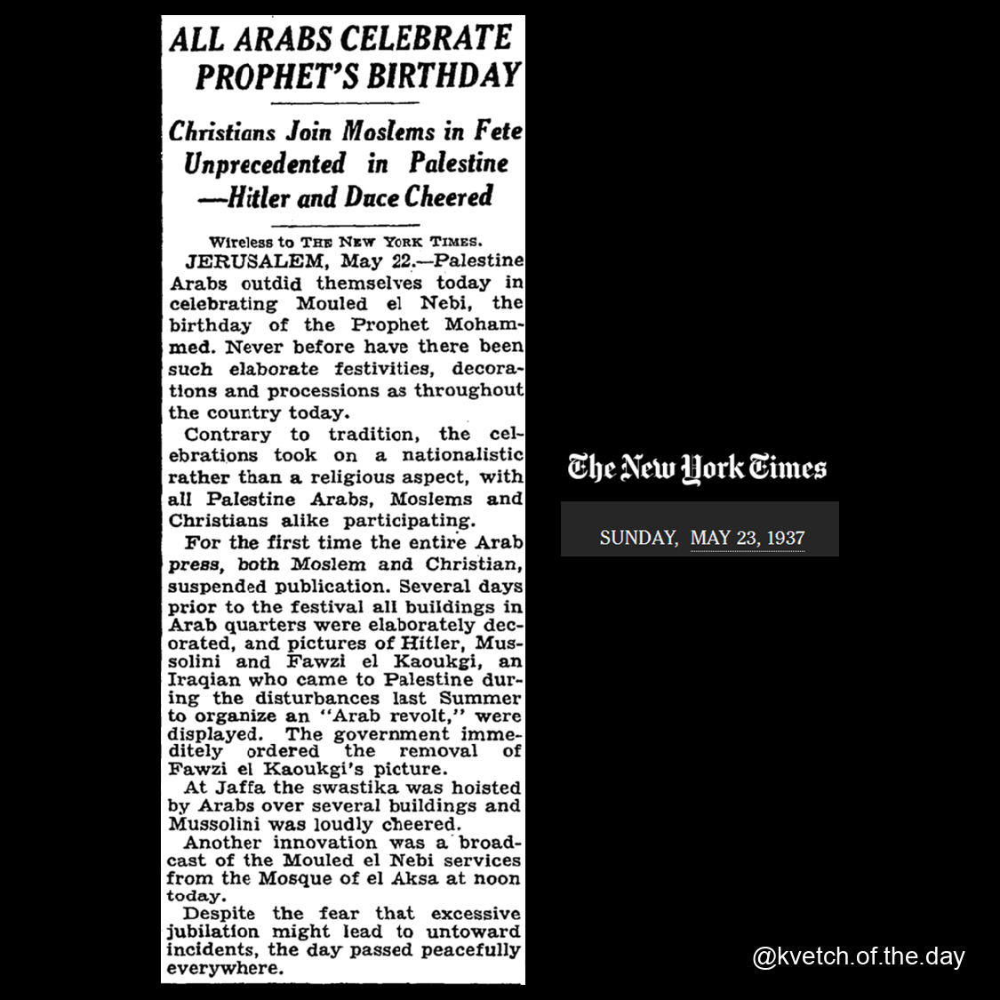
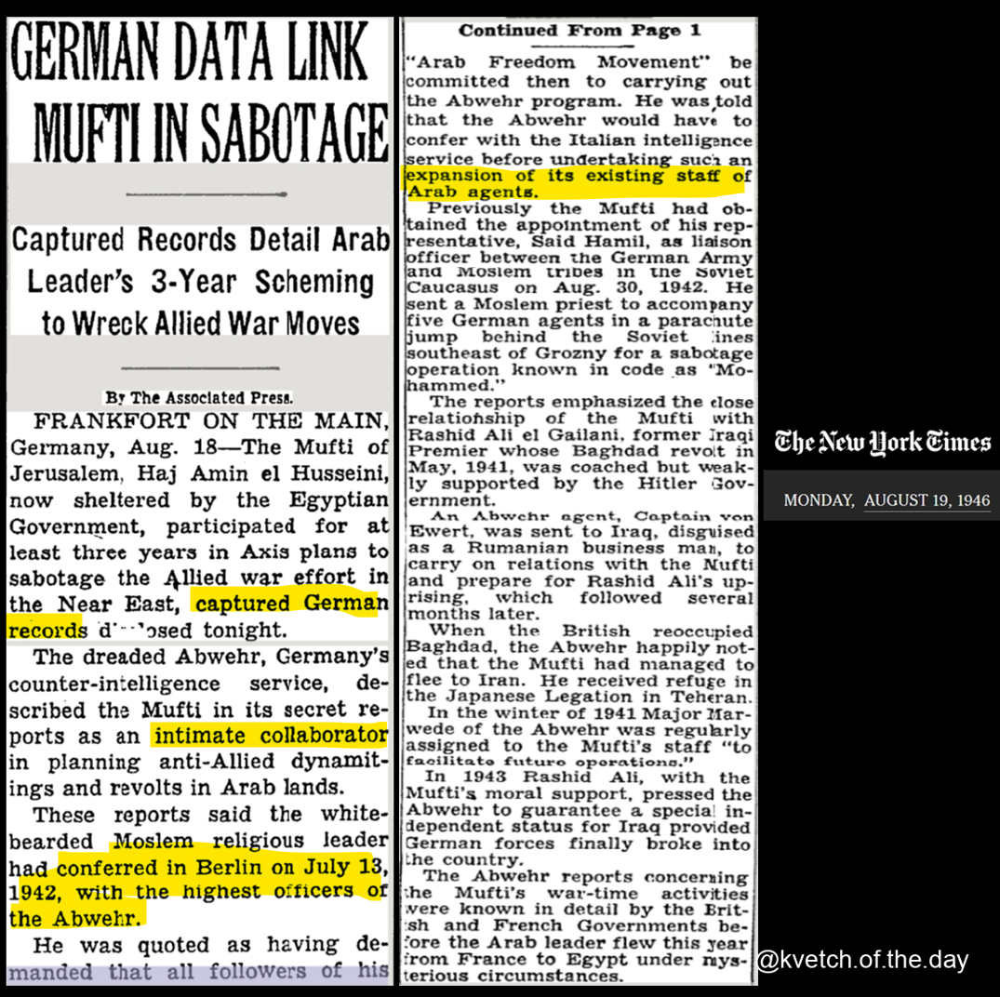
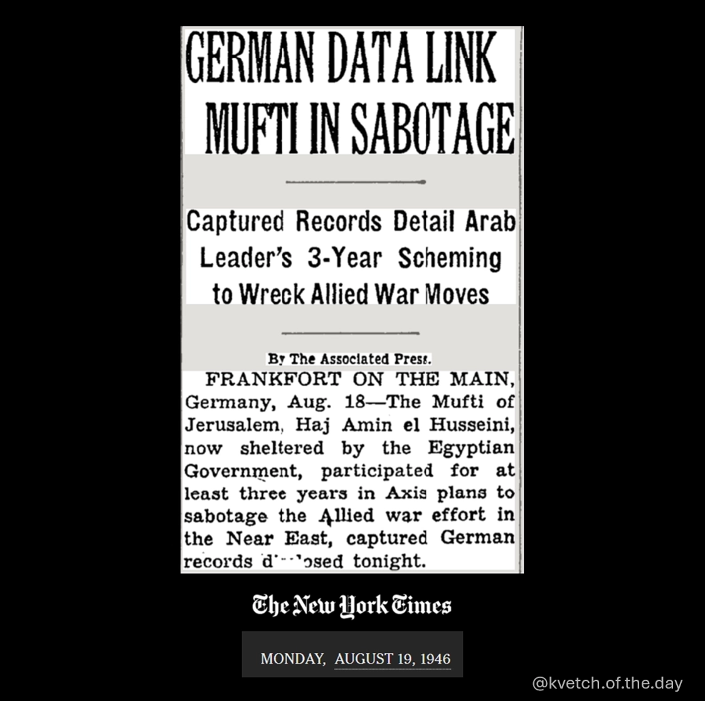
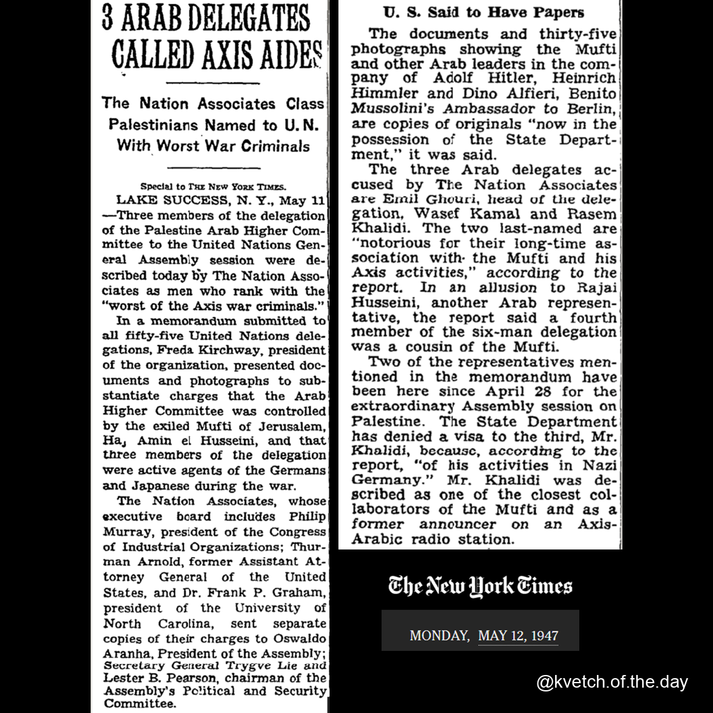
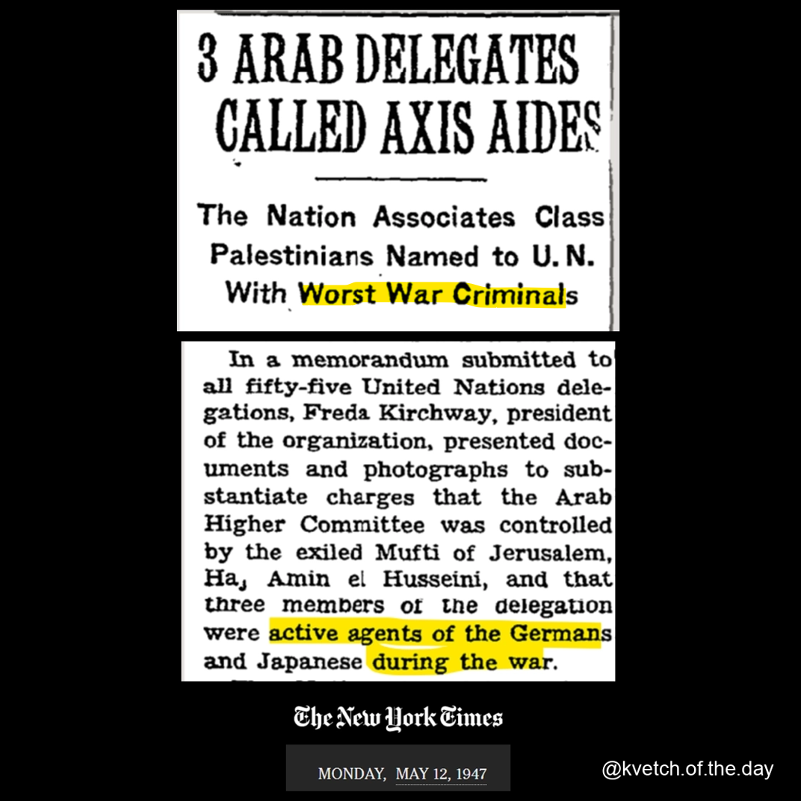
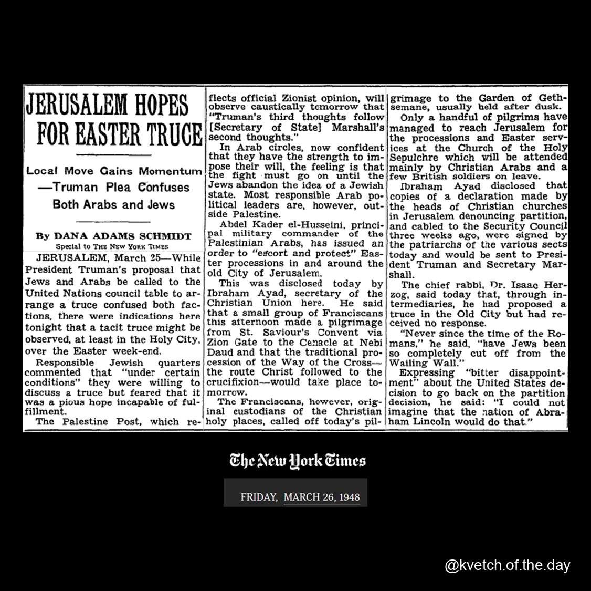
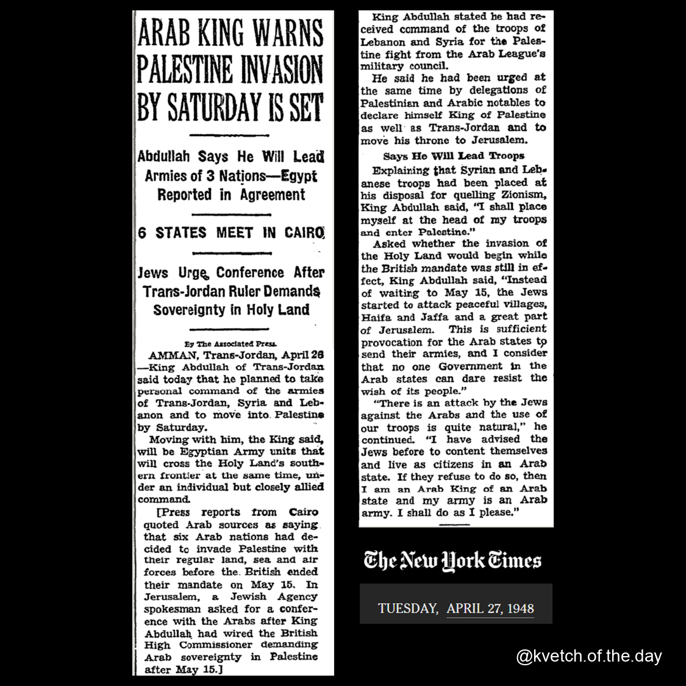
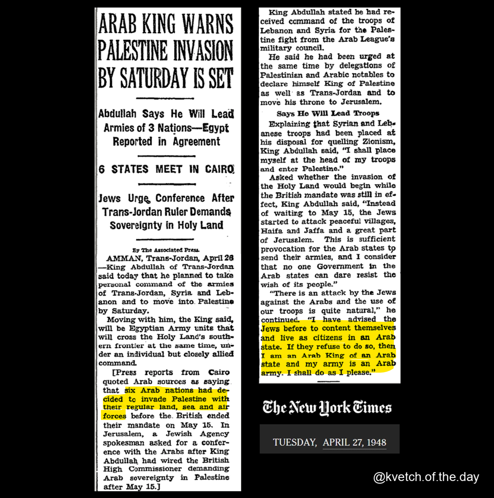

Western Antisemitism Judean origins/Jewish indigeneity
Interesting Hebrew Relic 1851-12-12 US Jewish history (relative to time of article) The Americas
The Jewish Question 1852-05-08 England/UK Legal Restrictions against Jews Emancipation Europe
Jewish Disabilities 1852-05-25 Western Antisemitism Christianity & Churches Legal Restrictions against Jews Ethnic Cleansing
England: The Jewish Emancipation Bill Thrown Out 1853-05-16 England/UK Western Antisemitism Legal Restrictions against Jews Christianity & Churches Emancipation accusation of "Jewish Supremacy" and/or Genocide Europe
Austrian Treatment of the Jews 1853-11-25 Austria Western Antisemitism Legal Restrictions against Jews Europe
The Way They Treat the Jew in England 1856-06-25 England/UK Western Antisemitism Legal Restrictions against Jews Emancipation Christianity & Churches Europe
US Western Antisemitism The Americas
Compulsory Christianity in Italy 1858-10-23 Italy Christianity & Churches Targeting of Children Western Antisemitism Legal Restrictions against Jews Europe
Abduction a Christian Duty 1858-11-09 Italy Christianity & Churches Targeting of Children Western Antisemitism Legal Restrictions against Jews Europe
The Mortara Case--Movement of the Jews 1858-11-22 Italy Christianity & Churches Targeting of Children Legal Restrictions against Jews Western Antisemitism Europe
The Slaughter in Syria 1860-07-26 Syria Turkey Arab World Islamic World
The Syrian Slaughters 1860-07-31 Turkey Syria Arab World Islamic World
The Syrian Outbreak 1860-08-11 Syria Turkey Arab World Islamic World
The Syrian Outbreak 1860-08-13 Turkey Syria Arab World Islamic World
The Syrian Massacres 1860-08-14 Syria Turkey Arab World Islamic World
De Cordova's Lecture on the Jews 1860-10-24 US Western Antisemitism Austria Spain Germany Holland rag trade Jewish history (relative to time of article) Europe The Americas
Affairs in Syria 1860-10-25 Syria Israel/Palestine Sources of Funding Arab World Islamic World
The Syrian Christians 1860-11-21 Syria France Arab World Europe Islamic World
Beauregard and the Jews 1863-02-08 US The Americas
The Insurance Companies and "Jew Risks" 1867-03-31 US Western Antisemitism Legal Restrictions against Jews The Americas
Turkey: Protection for the Jews 1868-05-11 Turkey Muslim Antisemitism Romania Ukraine Moldova Europe Islamic World
Russia: An Old Law Relating to Jews Revived 1869-11-27 Russia Western Antisemitism Legal Restrictions against Jews Ethnic Cleansing Europe
The Jews in Rome 1870-12-27 Italy Christianity & Churches Ghettos Western Antisemitism Legal Restrictions against Jews Europe
Poland Russia Western Antisemitism Legal Restrictions against Jews Europe
Algeria France Legal Restrictions against Jews Western Intervention Jews as aliens/foreigners Arab World Africa Europe Islamic World
Israel/Palestine Africa Morocco Egypt Yemen China Use of "colony" to describe Jewish communities Iran Judean origins/Jewish indigeneity Jewish history (relative to time of article) Arab World Asia Islamic World
Persecution of Jews in Roumania 1872-03-23 Romania Pogroms Western Antisemitism Ethnic Cleansing Europe
Turkey: The Anti-Jewish Riots at Smyrna 1872-05-31 Turkey Greece Western Antisemitism Blood Libel Pogroms Targeting of Children Europe Islamic World
Jew Versus Christian 1872-06-11 Blood Libel Western Antisemitism Turkey Greece Europe Islamic World
The Jews in Italy 1874-03-04 Italy Legal Restrictions against Jews Western Antisemitism Europe
Abyssinian Slaves 1874-08-02 Africa Ethiopia Sudan Arab World Islamic World
Outrages at Smyrna 1874-09-14 Turkey Muslim Antisemitism Islamic World
A Rabbi's Scientific Expedition 1874-11-11 Morocco Algeria France Africa Arab World Europe Islamic World
The Emperor of Russia and the Jews 1874-12-12 Russia Western Antisemitism Legal Restrictions against Jews Europe
Religious Dissensions in Syria 1874-12-27 Syria Arab World Islamic World
Excitement in Crete 1875-06-25 Greece Turkey Legal Restrictions against Jews Western Antisemitism Muslim Antisemitism Europe Islamic World
The Jews in Italy 1875-08-01 Italy Christianity & Churches Ghettos Western Antisemitism Legal Restrictions against Jews Europe
The Jews of Lincoln 1875-09-12 England/UK Western Antisemitism Blood Libel Pogroms Jewish history (relative to time of article) Europe
Israel/Palestine Judean origins/Jewish indigeneity
Surveying Palestine 1875-10-13 Israel/Palestine Algeria Use of "colony" to describe Jewish communities Arab World Africa Islamic World
The Jews in Roumania 1876-01-16 Romania Western Antisemitism Legal Restrictions against Jews Ethnic Cleansing Europe
The Jews in Morocco 1876-06-23 Morocco Muslim Antisemitism US Italy Arab World Africa Europe The Americas Islamic World
One of the Sights of Jerusalem 1876-07-23 Israel/Palestine Judean origins/Jewish indigeneity
The Return of the Jews 1877-06-03 Israel/Palestine Morocco Russia Poland Judean origins/Jewish indigeneity Arab World Africa Europe Islamic World
The Jews in Turkey 1877-06-17 Turkey Israel/Palestine Muslim Antisemitism Use of "colony" to describe Jewish communities Islamic World
Hebrew, Israelite, Jew 1877-09-18 US Jewish history (relative to time of article) The Americas
The Suffering Jews in Turkey 1878-03-01 Turkey Israel/Palestine Ethnic Cleansing Bulgaria Europe Islamic World
The Jews and the Keys of Jerusalem 1878-11-17 Israel/Palestine Turkey Jewish history (relative to time of article) Islamic World
Jews in Jerusalem 1878-12-29 Israel/Palestine Muslim Antisemitism
Jews in Germany in the Last Century 1879-01-05 Germany Western Antisemitism Legal Restrictions against Jews rag trade Europe
A Plea for Dumb Animals 1879-01-17 US Jewish contributions/activism The Americas
Poland Jewish history (relative to time of article) Europe
A Dark Chapter of History 1879-03-03 Spain Christianity & Churches Ethnic Cleansing Western Antisemitism Legal Restrictions against Jews Jewish history (relative to time of article) Europe
A Jewish Emigration Scheme 1879-03-15 US Hungary Use of "colony" to describe Jewish communities Europe The Americas
Egyptian Influence on Hebrew Names 1879-03-30 Egypt Jewish history (relative to time of article) Arab World Africa Islamic World
The Sea of Galilee 1879-04-06 Israel/Palestine Jewish history (relative to time of article)
Sunday Services for Hebrews 1879-05-19 US Jewish Culture Beliefs & Debates The Americas
American Israelites in Russia 1879-06-11 US Russia Western Antisemitism Legal Restrictions against Jews Europe The Americas
The Jews of Roumania 1879-07-06 Romania Western Antisemitism Legal Restrictions against Jews Jews as aliens/foreigners Europe
US Western Antisemitism Legal Restrictions against Jews The Americas
The Turkish Negotiations 1879-09-08 Romania Turkey Western Antisemitism Legal Restrictions against Jews Emancipation Europe Islamic World
The Roumanian Hebrews 1879-09-14 Romania Western Antisemitism Legal Restrictions against Jews Victim Blaming/Justification of Antisemitism Jews as aliens/foreigners Europe
US Western Antisemitism Christianity & Churches Legal Restrictions against Jews Jewish history (relative to time of article) The Americas
European Statesmanship 1879-10-19 Romania Western Antisemitism Legal Restrictions against Jews Europe
Dark Omens in the East 1879-12-15 Germany Western Antisemitism Jews as aliens/foreigners Europe
The Jews in Europe 1880-02-15 Western Antisemitism Political Zionism Christianity & Churches Germany Romania Europe
Desolation of Palestine 1880-05-03 Israel/Palestine Turkey Islamic World
Morocco Jewish history (relative to time of article) Arab World Africa Islamic World
Jews in Germany 1880-08-28 Germany Western Antisemitism Legal Restrictions against Jews Bismark Europe
Persecution of Jews in Morocco 1880-10-09 Morocco Muslim Antisemitism Legal Restrictions against Jews Arab World Africa Islamic World
The German War on the Jews 1880-11-24 Germany Western Antisemitism Legal Restrictions against Jews Europe
The Jews in Germany 1880-11-29 Germany Western Antisemitism Legal Restrictions against Jews Education/Educators weaponized against Jews Jews as aliens/foreigners Europe
The German Anti-Jewish War 1880-12-06 Western Antisemitism Germany Education/Educators weaponized against Jews Europe
Modern Persecution of Jews 1880-12-07 Western Antisemitism Germany Legal Restrictions against Jews accusation of "Jewish Supremacy" and/or Genocide Jewish history (relative to time of article) Europe
Pleas for German Jews 1880-12-20 Germany Western Antisemitism Legal Restrictions against Jews accusation of "Jewish Supremacy" and/or Genocide Education/Educators weaponized against Jews Europe
Persecution of Jews in Morocco 1881-01-16 Morocco Muslim Antisemitism Legal Restrictions against Jews Arab World Africa Islamic World
Israel/Palestine Western Antisemitism Muslim Antisemitism Boycotts against Jews Romania Italy Europe
The Jews in Germany 1881-04-16 Germany Western Antisemitism Legal Restrictions against Jews Bismark Europe
Journeys In Asia Minor 1881-04-25 Israel/Palestine Antizionism Western Antisemitism Judean origins/Jewish indigeneity
Anti-Jewish Riots in Europe 1881-04-30 Western Antisemitism Education/Educators weaponized against Jews Russia Blood Libel Pogroms Europe
Events in Russia 1881-05-02 Western Antisemitism Russia Pogroms Europe
The Crusade Against the Jews 1881-05-22 Western Antisemitism Russia Pogroms Europe
Jewish Ladies Whipped 1881-07-04 Western Antisemitism Russia Targeting of Children Pogroms Legal Restrictions against Jews Europe
How Jews Have Fared in Spain 1881-07-12 Spain Western Antisemitism Ethnic Cleansing Europe
Spain Legal Restrictions against Jews Western Antisemitism Ethnic Cleansing Europe
Herr Stocker And the Jews 1881-07-28 Christianity & Churches Germany accusation of "Jewish Supremacy" and/or Genocide Western Antisemitism Europe
Anti-Jewish Agitation 1881-08-25 Western Antisemitism Bismark Germany Europe
Against the Jews 1881-08-26 Germany Western Antisemitism Legal Restrictions against Jews Christianity & Churches accusation of "Jewish Supremacy" and/or Genocide Europe
State Questions in Germany 1881-09-15 Germany Western Antisemitism Pogroms Bismark Legal Restrictions against Jews Europe
Reformed Judaism 1881-10-31 Jewish Culture Beliefs & Debates
Restoring Solomon’s Temple 1881-10-31 Israel/Palestine Turkey Judean origins/Jewish indigeneity Jewish history (relative to time of article) Islamic World
Jews in Palestine 1881-11-25 Israel/Palestine Turkey Syria Western Antisemitism Muslim Antisemitism Judean origins/Jewish indigeneity Jewish history (relative to time of article) Arab World Islamic World
The Mosque at Jerusalem and Not the Temple to Be Restored 1881-12-12 Israel/Palestine Turkey Jewish history (relative to time of article) Islamic World
The Calamity At Warsaw 1881-12-27 Poland Russia Pogroms Western Antisemitism Europe
The Jewish Agitation 1882-02-04 Western Antisemitism Russia England/UK Europe
Provocations to Russian Jews 1882-02-05 Russia Western Antisemitism Legal Restrictions against Jews Europe
The Condition of Russian Jews 1882-04-09 Russia US Western Antisemitism Pogroms Europe The Americas
Only Killing a Jew 1882-04-16 Western Antisemitism US The Americas
Russia and the Jews 1882-04-22 Russia Pogroms Western Antisemitism Ukraine Europe
Russia and the Jews 1882-04-22 Russia Pogroms Western Antisemitism Legal Restrictions against Jews Europe
Tried for Blasphemy 1882-05-24 Western Antisemitism Christianity & Churches US Legal Restrictions against Jews The Americas
The Anti-Jewish Crusade 1882-05-25 Russia Western Antisemitism Legal Restrictions against Jews Europe
The Russian Refugees 1882-06-05 Russia Western Antisemitism Use of "colony" to describe Jewish communities US Ethnic Cleansing Europe The Americas
Jews Going Out of Russia 1882-06-12 Russia Pogroms Ethnic Cleansing Sources of Funding Use of "colony" to describe Jewish communities Europe
The Polish Jewish Colony 1882-06-19 Poland US Use of "colony" to describe Jewish communities Europe The Americas
Hungarians and Jews 1882-07-14 Western Antisemitism Blood Libel Russia England/UK Christianity & Churches Hungary Ethnic Cleansing Europe
Russian Jews as Citizens 1882-08-12 Western Antisemitism Russia US Europe The Americas
Between Moslem and Jew 1882-08-20 Christianity & Churches Western Antisemitism Judean origins/Jewish indigeneity Jewish history (relative to time of article)
The Jews of York 1882-08-27 England/UK Western Antisemitism Pogroms Jewish history (relative to time of article) Europe
Shall Jews Go East or West 1882-09-24 Syria Russia Romania US Western Antisemitism Arab World Europe The Americas Islamic World
The Anti-Jewish Riots 1882-10-01 Western Antisemitism Pogroms Austria Europe
The Jewish Riots in Hungary 1882-10-12 Hungary Western Antisemitism Pogroms Europe
No Exceptions For the Hebrews 1882-12-24 US Western Antisemitism Legal Restrictions against Jews The Americas
A Question for the Jews 1884-01-17 US Jewish Culture Beliefs & Debates The Americas
Riot Against Austrian Jews 1884-07-22 Austria Pogroms Europe
Montefiore and the Jews 1884-11-04 Italy Israel/Palestine Morocco Romania Christianity & Churches Blood Libel Western Antisemitism Muslim Antisemitism Legal Restrictions against Jews Jewish history (relative to time of article) Arab World Africa Europe Islamic World
Protection to Jews in Tangiers 1885-03-15 Morocco US Muslim Antisemitism Arab World Africa The Americas Islamic World
Israel/Palestine Druze
No Hebrews Accepted 1885-04-11 US Western Antisemitism Legal Restrictions against Jews The Americas
The Jews of Morocco 1885-05-10 Morocco Muslim Antisemitism Ghettos Legal Restrictions against Jews Arab World Africa Islamic World
Jews of Northern Caucus 1885-07-09 Russia Use of "colony" to describe Jewish communities Jewish history (relative to time of article) Europe
France Jewish history (relative to time of article) Europe
Statistics of the Jews 1885-10-17 Jewish history (relative to time of article)
Jews for the Russian Army 1886-04-10 Russia Western Antisemitism Legal Restrictions against Jews Europe
Jews to Be Dismissed 1886-07-04 Russia Legal Restrictions against Jews Western Antisemitism Europe
Sunday Law for Jews 1887-04-16 Legal Restrictions against Jews Western Antisemitism US The Americas
Morocco's Inhabitants 1887-10-26 Morocco Muslim Antisemitism Arab World Africa Islamic World
The Oldest Jewish Gravestone 1887-10-30 Germany Jewish history (relative to time of article) Europe
Cremation Among the Jews 1888-01-04 England/UK Jewish Culture Beliefs & Debates Europe
The Jews in Morocco 1888-01-25 Morocco US Muslim Antisemitism Arab World Africa The Americas Islamic World
Driven From Jerusalem 1888-05-06 Israel/Palestine Turkey Ethnic Cleansing Judean origins/Jewish indigeneity Jewish history (relative to time of article) Islamic World
Jews in Prussia 1888-08-18 Germany Jewish history (relative to time of article) Europe
Hebrews Not Wanted 1889-07-21 US Western Antisemitism The Americas
Iraq Mesopotamia Muslim Antisemitism Legal Restrictions against Jews Arab World Islamic World
Jews as Enemies of Catholics 1890-02-28 Christianity & Churches Blood Libel Western Antisemitism Italy Europe
Hebrew, Israelite, and Jew 1890-08-03 Jewish history (relative to time of article)
Singular Attack on a Jew 1890-09-21 Austria Western Antisemitism Europe
Why Russia Persecutes Jews 1890-12-29 Russia Western Antisemitism Legal Restrictions against Jews Ethnic Cleansing Europe
Colonization of Russian Jews 1891-02-07 US Russia Use of "colony" to describe Jewish communities Europe The Americas
Jewish Hardships in Russia 1891-04-15 Russia Legal Restrictions against Jews Ethnic Cleansing Europe
Religious Riot in Zante 1891-05-02 Greece Pogroms Western Antisemitism Christianity & Churches Targeting of Civilians Blood Libel Europe
Hebrews Killed in Corfu 1891-05-14 Greece Western Antisemitism Pogroms Legal Restrictions against Jews Europe
The Persecuted Jews 1891-05-30 Russia Christianity & Churches Legal Restrictions against Jews Western Antisemitism Europe
Jews Barred From Palestine 1891-06-27 Turkey Israel/Palestine Legal Restrictions against Jews Islamic World
A Home for the Jews 1891-07-09 Argentina Israel/Palestine Use of "colony" to describe Jewish communities The Americas
Jews Barred From Roumania 1891-07-15 Romania Russia Western Antisemitism Legal Restrictions against Jews Ethnic Cleansing Europe
Driven From His Country 1891-12-18 Russia US Western Antisemitism Legal Restrictions against Jews Ethnic Cleansing Europe The Americas
Only Selected Jews Wanted 1892-04-14 Germany Russia US Argentina Israel/Palestine Use of "colony" to describe Jewish communities Europe The Americas
Hebrews for Manitoba 1892-04-29 Use of "colony" to describe Jewish communities Sources of Funding Canada The Americas
Austrian Jew Baiters Thrashed 1892-06-19 Austria Western Antisemitism Europe
Jewish Colonization Experiment 1892-09-06 US Use of "colony" to describe Jewish communities The Americas
A Contented Colony 1893-03-16 US Use of "colony" to describe Jewish communities The Americas
Converting the Jews, Part 1 1893-04-19 US Western Antisemitism Christianity & Churches The Americas
Anti-Semitism's False Basis 1893-10-10 US Western Antisemitism Jewish Culture Beliefs & Debates The Americas
Mohammed and the Medina Jews 1895-08-10 Legal Restrictions against Jews Muslim Antisemitism Saudi Arabia Jewish history (relative to time of article) Arab World Islamic World
Persecution of Jews in Russia 1895-08-10 Russia Western Antisemitism Ethnic Cleansing Europe
The Jewish Question 1895-09-13 England/UK Western Antisemitism Emancipation Europe
Tewfik Pasha's Surprise 1895-11-06 Turkey Germany Israel/Palestine Legal Restrictions against Jews Europe Islamic World
Jewish Return to Palestine 1896-09-13 Israel/Palestine Political Zionism Theodor Herzl
Jews Barred From Roumania 1897-04-27 Romania Legal Restrictions against Jews Western Antisemitism Europe
Jews Persecuted in Persia 1897-06-29 Iran Muslim Antisemitism US Pogroms The Americas Islamic World
Anti-Jew Riots in Algiers 1898-01-20 Algeria Western Antisemitism Pogroms Education/Educators weaponized against Jews Arab World Africa Islamic World
Fatal Riots in Algiers 1898-01-24 Algeria Western Antisemitism Pogroms Arab World Africa Islamic World
Jews Attacked in Algiers 1898-01-25 Algeria Pogroms Muslim Antisemitism Arab World Africa Islamic World
More Rioting in Algiers 1898-01-26 Algeria Western Antisemitism Pogroms Arab World Africa Islamic World
Jews Attacked in Algiers 1898-01-27 Algeria Pogroms Muslim Antisemitism Arab World Africa Islamic World
Tatza Jews Killed by Arabs 1898-03-07 Morocco Muslim Antisemitism Abductions of Jews Pogroms Arab World Africa Islamic World
Jewish Soldiers at Camp Meade 1898-09-24 US The Americas
American Influence on Foreign Jews 1898-12-11 US Jewish Culture Beliefs & Debates The Americas
Western Antisemitism Jewish history (relative to time of article) Judean origins/Jewish indigeneity
Alleged Outrages on Jews 1899-01-05 US Western Antisemitism The Americas
More Rioting in Paris 1899-01-28 France Western Antisemitism Pogroms Dual Loyalty Trope Europe
Anti-Semitic Trouble in Algiers 1899-04-24 Algeria Pogroms Muslim Antisemitism Arab World Africa Islamic World
US Jewish Culture Beliefs & Debates The Americas
Orleanists Are Active 1899-09-07 France Western Antisemitism Europe
More anti-jewish riots in Prussia 1900-04-27 Germany Pogroms Western Antisemitism Europe
More Anti-Semitic Riots in Konitz 1900-06-12 Germany Poland Western Antisemitism Pogroms Blood Libel Europe
Anti-Semite Ire Aroused 1900-11-05 France Western Antisemitism Legal Restrictions against Jews Europe
The Jews as Drinkers 1900-11-25 Jewish Culture Beliefs & Debates
Ancient Jews in China 1901-02-02 China Jewish history (relative to time of article) Asia
anti-jewish riot at Smyrna 1901-04-04 Turkey Blood Libel Western Antisemitism Muslim Antisemitism Ghettos Greece Europe Islamic World
Many Jews Indorse Zionist Movement 1901-04-15 US Political Zionism The Americas
Jewish Visitors to Palestine 1901-04-17 Turkey Israel/Palestine Muslim Antisemitism Legal Restrictions against Jews Islamic World
Turkey Wants to Bar Jews 1901-05-05 Turkey Italy Israel/Palestine Legal Restrictions against Jews Western Intervention Europe Islamic World
To Emancipate the Jews 1901-06-13 US Russia Romania Legal Restrictions against Jews Western Antisemitism Emancipation Europe The Americas
Jews Leaving Roumania 1902-06-07 Romania US Western Antisemitism Legal Restrictions against Jews Ethnic Cleansing Europe The Americas
Arabs Massacre Hundreds 1902-06-11 Turkey Kuwait Arab World Islamic World
Dr. Herzl’s mission to constantinople 1902-08-12 Theodor Herzl Turkey Political Zionism Islamic World
Dreyfus Appeals for New Hearing 1903-04-23 France Western Antisemitism Dreyfus Affair Europe
Scores of Jews Killed 1903-04-26 Russia Pogroms Western Antisemitism Europe
Zionists Warned Jews 1903-05-18 Political Zionism Western Antisemitism Pogroms
Kishineff Assassins Escaping Scot Free 1903-05-22 Russia Pogroms Western Antisemitism Ethnic Cleansing Legal Restrictions against Jews Europe
The Weakness of the Jews 1903-05-24 Russia Pogroms Western Antisemitism Jews as aliens/foreigners Europe
The Weakness of the Jews 1903-05-24 Russia US Pogroms Western Antisemitism Europe The Americas
Odessa Jews Armed 1903-06-04 Russia Pogroms Western Antisemitism Ukraine Europe
Kishineff Jews Were Disarmed by Soldiers 1903-06-06 Russia Pogroms Western Antisemitism Legal Restrictions against Jews Moldova Europe
Jews in Peril in Russian Poland 1903-06-09 Russia Poland Pogroms Western Antisemitism Ethnic Cleansing Europe
Roumanian Jews in Peril 1903-06-10 Romania Russia Pogroms Western Antisemitism Ethnic Cleansing Christianity & Churches Europe
Jews Blamed for Massacre 1903-06-17 Christianity & Churches Russia Ukraine Pogroms Victim Blaming/Justification of Antisemitism Europe
Jews Beaten to Death by Police and Cossacks 1903-06-18 Russia Poland Pogroms Western Antisemitism Europe
Massacre of Jews Averted 1903-06-19 Russia Pogroms Western Antisemitism Europe
"Let Us Embrace, Kiss, and Go Kill Jews" 1903-06-28 Russia Pogroms Western Antisemitism Christianity & Churches Europe
Feeling Against the Jews 1903-06-28 US Russia Western Antisemitism Christianity & Churches Pogroms Europe The Americas
To Discuss Jewish Sabbath 1903-06-29 US Jewish Culture Beliefs & Debates The Americas
Only Zion for the Jews 1903-09-13 Israel/Palestine England/UK Germany Western Antisemitism Muslim Antisemitism Use of "colony" to describe Jewish communities Spain Dreyfus Affair Arab League Jews as aliens/foreigners Judean origins/Jewish indigeneity Jewish history (relative to time of article) Europe
Jews Massacred in Morocco 1903-11-17 Morocco Muslim Antisemitism Targeting of Children Turkey Pogroms Targeting of Civilians Arab World Africa Islamic World
Russian Opinions on Jews 1903-12-21 Russia Western Antisemitism Legal Restrictions against Jews Europe
Russian Harshness to Jews Increases 1904-02-19 Russia Poland Western Antisemitism Legal Restrictions against Jews Ethnic Cleansing Europe
To Avert Another Kishineff 1904-04-10 Russia US England/UK France Germany Pogroms Western Intervention Western Antisemitism Europe The Americas
Poor Jews Defended in House of Commons 1904-04-26 England/UK Western Antisemitism Legal Restrictions against Jews Europe
"Aliens" and Jews 1904-05-14 England/UK Western Antisemitism Legal Restrictions against Jews Jews as aliens/foreigners Europe
Rabbis Discuss Sabbath 1904-06-29 US Jewish Culture Beliefs & Debates The Americas
Russian Jews Massacred 1904-08-28 Russia Pogroms Western Antisemitism Christianity & Churches Europe
Russia Still to Bar Jews 1904-09-03 Russia US Western Antisemitism Legal Restrictions against Jews Europe The Americas
Robbed a Cornerstone 1904-09-16 US The Americas
Russia Blames the Jews 1904-10-27 Russia Pogroms Western Antisemitism Victim Blaming/Justification of Antisemitism accusation of "Jewish Supremacy" and/or Genocide Christianity & Churches Europe
Troops Pillage Jews' Homes 1905-05-15 Russia Pogroms Western Antisemitism Moldova Europe
Soldiers Looted, Jews Fired 1905-06-14 Poland Russia Pogroms Western Antisemitism Europe
Cossacks Massacre Lodz Inhabitants 1905-06-26 Russia Poland Pogroms Western Antisemitism Europe
Barricades Stormed by Troops in Warsaw 1905-06-27 Poland Russia Pogroms Western Antisemitism Ethnic Cleansing Europe
Persecution of the Jews 1905-08-18 Russia Romania Morocco Iran Western Antisemitism Muslim Antisemitism Legal Restrictions against Jews Arab World Africa Europe Islamic World
A Question for the Jews 1905-08-31 Russia Legal Restrictions against Jews Ethnic Cleansing Western Antisemitism Europe
Territorial Zones for Jews 1905-08-31 Western Antisemitism US The Americas
200 Jews Arrested 1905-09-24 Poland Russia Western Antisemitism Legal Restrictions against Jews Europe
Towns Burned; Jews Perish 1905-11-08 Russia Romania Pogroms Western Antisemitism Ethnic Cleansing Europe
Jews in Capital Terrified 1905-11-10 Russia Pogroms Western Antisemitism Europe
25,000 Jews Murdered 1905-11-18 Russia Canada Pogroms Western Antisemitism Europe The Americas
Odessa Jews in a Panic 1905-12-04 Russia Pogroms Western Antisemitism Ukraine Europe
Jews in Lodz Attacked 1905-12-15 Poland Russia Pogroms Western Antisemitism Europe
May End Jewish Inequality 1906-03-16 Russia Western Antisemitism Legal Restrictions against Jews Emancipation Europe
New Revolt in Morocco 1906-04-16 Morocco Muslim Antisemitism Arab World Africa Islamic World
The Jewish Question Discussed by Gorky 1906-04-26 Russia Western Antisemitism "Jewish Question" Europe
Moorish Jews Grateful 1906-06-10 Morocco US Legal Restrictions against Jews Muslim Antisemitism Arab World Africa The Americas Islamic World
Jews of Russian City Are Being Massacred 1906-06-15 Russia Poland Pogroms Western Antisemitism Europe
Bombs Openly Sold in Bialystok Streets 1906-06-17 Russia Poland Pogroms Western Antisemitism Europe
Advertisement Vexes Jews 1906-06-18 US Western Antisemitism The Americas
General Massacre Feared 1906-06-18 Russia Poland Pogroms Western Antisemitism Europe
Troops Aided Mob to Murder Jews 1906-06-18 Russia Poland Pogroms Western Antisemitism Blood Libel Victim Blaming/Justification of Antisemitism Europe
City a Scene of Horror 1906-06-19 Russia Poland Pogroms Western Antisemitism Europe
Massacre Organizer Promptly Promoted 1906-06-19 Russia Poland Pogroms Western Antisemitism Europe
More Anti-Jewish Riots 1906-06-19 Russia Pogroms Western Antisemitism Europe
Bialystok Slaughter Carefully Planned 1906-06-20 Russia Poland Pogroms Western Antisemitism accusation of "Jewish Supremacy" and/or Genocide Europe
Fifty More Jews Killed 1906-06-20 Russia Pogroms Western Antisemitism Europe
Prepare to Massacre Sevastopol Liberals 1906-06-28 Russia Pogroms Western Antisemitism Europe
Fear of Pogroms To-Day 1906-06-30 Russia Pogroms Western Antisemitism Christianity & Churches Europe
Czar Aids Agitators Who Would Kill Jews 1906-09-28 Russia Pogroms Western Antisemitism Europe
Anti-Semites Attack Zion Congress 1906-12-27 Romania Political Zionism Western Antisemitism Pogroms Europe
Roumanian Jews Fleeing to Austria 1907-03-20 Romania Austria Western Antisemitism Pogroms Ethnic Cleansing Europe
Roumanian Rioters Killed by Troops 1907-03-21 Romania Pogroms Western Antisemitism Moldova Europe
Roumanian Troops Mutiny 1907-03-25 Romania Pogroms Western Antisemitism Europe
Roumanian Troops Side with Rebels 1907-03-26 Romania Pogroms Western Antisemitism Europe
Hundreds of Jews Destitute 1907-03-27 Romania Pogroms Western Antisemitism Ethnic Cleansing Europe
Jews in Tangier Alarmed 1907-04-03 Morocco Muslim Antisemitism Arab World Africa Islamic World
Russian Jews in Panic 1907-04-10 Russia Pogroms Western Antisemitism Ethnic Cleansing Europe
More rumors of pogroms 1907-04-11 Blood Libel Western Antisemitism Pogroms Russia Europe
Russian Jews for Texas 1907-06-08 Russia US Use of "colony" to describe Jewish communities Europe The Americas
Odessa Renews Violence to Jews 1907-06-13 Russia Pogroms Western Antisemitism Ethnic Cleansing Victim Blaming/Justification of Antisemitism Ukraine Europe
Slain at Bialystok 1907-08-19 Russia Poland Pogroms Western Antisemitism Europe
Another Odessa Pogrom 1907-10-07 Russia Pogroms Western Antisemitism Ethnic Cleansing Ukraine Europe
100,000 Black Jews 1908-03-22 Africa England/UK Italy Sources of Funding Europe
Helping Abyssinian Jews 1908-03-22 Africa England/UK Sources of Funding Jewish history (relative to time of article) Europe
Felix Adler in Berlin 1908-06-07 Germany US Western Antisemitism Legal Restrictions against Jews Education/Educators weaponized against Jews Europe The Americas
May Relax Anti-Jew Laws 1908-06-26 Russia Western Antisemitism Legal Restrictions against Jews Europe
The Finns and the Jews 1908-12-27 Finland Russia Western Antisemitism Legal Restrictions against Jews Europe
Finland’s Anti-Jew Laws 1909-03-20 Western Antisemitism Finland Legal Restrictions against Jews Europe
Mob Jews in Persia 1909-03-30 Iran Muslim Antisemitism Pogroms Victim Blaming/Justification of Antisemitism Islamic World
No Present Relief for Finnish Jews 1909-05-02 Finland Western Antisemitism Legal Restrictions against Jews Europe
Russian Mobs Kill Jews 1909-07-07 Russia Pogroms Western Antisemitism Europe
To Relieve Russian Jews 1909-08-03 Russia Western Antisemitism Legal Restrictions against Jews Europe
Finland to Expel Jews 1909-09-12 Finland Western Antisemitism Legal Restrictions against Jews Ethnic Cleansing Europe
Jews Are Flocking Into the Holy Land 1910-01-17 Israel/Palestine Turkey Russia Iran Europe Islamic World
Expelling Jews Without Mercy 1910-04-10 Russia Western Antisemitism Legal Restrictions against Jews Asia Uzbekistan Ethnic Cleansing Europe Islamic World
Jews Plan to Fight White Slave Trade 1910-04-10 England/UK Jewish contributions/activism Europe
Oppressed Jews in Morocco Seek Aid From Powers 1910-04-10 Morocco Muslim Antisemitism Western Intervention Legal Restrictions against Jews Pogroms England/UK France Ghettos Arab World Africa Europe Islamic World
Jews Going to Turkey 1910-06-05 Russia Turkey US Ethnic Cleansing Use of "colony" to describe Jewish communities Ukraine Europe The Americas Islamic World
To Bar Jewish Delegates 1910-06-05 Russia Western Antisemitism Legal Restrictions against Jews Europe
A Russian Town Burned 1910-06-10 Russia Pogroms Western Antisemitism Ethnic Cleansing Europe
Careful Search for Jews 1910-06-10 Russia Western Antisemitism Legal Restrictions against Jews Ethnic Cleansing Europe
Police Hunt Down Jews in Russia 1910-06-12 Russia Western Antisemitism Legal Restrictions against Jews Ethnic Cleansing Ukraine Europe
More Mercy for Jews 1910-06-16 Russia Western Antisemitism Legal Restrictions against Jews Ethnic Cleansing Targeting of Children Christianity & Churches Europe
Haym Solomon Monument 1910-07-26 US Jewish history (relative to time of article) Jewish contributions/activism The Americas
Still Expelling Jews from Kieff 1910-09-02 Russia Western Antisemitism Ethnic Cleansing Ukraine Europe
Equal Rights for Jews Refused 1910-12-14 Finland Russia Western Antisemitism Legal Restrictions against Jews Europe
Russia More Drastic Against the Jews 1911-03-26 Russia Pogroms Western Antisemitism Legal Restrictions against Jews Ethnic Cleansing Education/Educators weaponized against Jews Europe
Expels Jews Without Permits 1911-05-13 Russia Western Antisemitism Legal Restrictions against Jews Ethnic Cleansing Europe
Massacre of Jews Feared 1911-05-14 Russia Pogroms Western Antisemitism Ukraine Europe
Seeks Light on Jew Bias 1911-06-08 US Western Antisemitism Legal Restrictions against Jews The Americas
To Expel Manchuria Jews 1911-06-09 China Russia Western Antisemitism Legal Restrictions against Jews Asia Europe
To Explain Jewish Incident 1911-06-09 US Western Antisemitism Legal Restrictions against Jews The Americas
Raid St. Petersburg Jews 1911-06-10 Russia Western Antisemitism Legal Restrictions against Jews Ethnic Cleansing Europe
Expelling More Jews 1911-06-20 Russia Western Antisemitism Legal Restrictions against Jews Ethnic Cleansing Ukraine Europe
New Anti-Jewish Campaign 1911-06-28 Russia Western Antisemitism Legal Restrictions against Jews Ethnic Cleansing Europe
To Expel 500 Jews 1911-08-24 Russia Western Antisemitism Legal Restrictions against Jews Ethnic Cleansing Europe
To Burn Jews' Houses 1911-09-02 Turkey Muslim Antisemitism Ghettos Legal Restrictions against Jews Islamic World
University in Jerusalem 1912-01-12 Israel/Palestine Sources of Funding
10,000 Jews of Fez Homeless, Starving 1912-04-26 Morocco Muslim Antisemitism Pogroms Arab World Africa Islamic World
Israel/Palestine Russia Targeting of Civilians Europe
Greek Outrages Reported 1912-12-01 Greece Turkey Western Antisemitism Pogroms Christianity & Churches Ethnic Cleansing Europe Islamic World
Old Jewish Colony in Heart of China 1913-06-01 China Use of "colony" to describe Jewish communities Jewish history (relative to time of article) Asia
Guard Threatened Jews 1913-06-03 Russia Poland Western Antisemitism Ethnic Cleansing Europe
To Eliminate Stage Jew 1913-06-13 US Western Antisemitism The Americas
Would Emancipate Rumanian Jews 1913-06-19 Romania Legal Restrictions against Jews Western Antisemitism Emancipation Europe
Kieff Expelling Jews 1913-07-13 Russia Western Antisemitism Ethnic Cleansing Ukraine Pogroms Legal Restrictions against Jews Europe
Minimizes Favor to Jews 1913-08-21 Romania Legal Restrictions against Jews Western Antisemitism Emancipation Europe
Odessa Jews Fear Pogroms 1913-10-22 Russia Pogroms Western Antisemitism Ethnic Cleansing Ukraine Europe
13,052,846 Jews in World 1914-01-06 World US Jewish Culture Beliefs & Debates The Americas
Mob Maltreats Jews in Lodz 1914-01-12 Russia Poland Pogroms Western Antisemitism Europe
Closes Schools to Jews 1914-03-10 Russia Western Antisemitism Legal Restrictions against Jews Education/Educators weaponized against Jews Europe
Blood Ritual Charges 1914-03-24 Russia Blood Libel Western Antisemitism Europe
Jew-Baiter Decorated 1914-04-20 Russia Blood Libel Western Antisemitism Europe
Attempt to Defend Anti-Jew Policy 1914-06-28 Russia England/UK Western Antisemitism Legal Restrictions against Jews Europe
For Army-Navy Hebrews 1914-07-10 US Jewish contributions/activism The Americas
"The Chosen People" 1914-09-11 Russia Western Antisemitism Legal Restrictions against Jews Austria France Dreyfus Affair Germany Emancipation Europe
Jews' New Year Big With Hope for Race 1914-09-21 US World Jewish Culture Beliefs & Debates The Americas
German Appeals for Jews 1914-11-07 Germany Turkey Legal Restrictions against Jews Europe Islamic World
The Jew's Bravery Established in War 1914-12-07 Jewish contributions/activism
Turks Rob, Slay Jews 1914-12-23 Turkey Muslim Antisemitism Ghettos Ethnic Cleansing Targeting of Civilians Targeting of Children Abductions of Jews Islamic World
Turks Slay and Rob Jews at Jaffa 1914-12-23 Israel/Palestine Turkey Ethnic Cleansing Targeting of Civilians Targeting of Children Muslim Antisemitism Abductions of Jews Islamic World
Jews in Flight From Palestine 1915-01-19 Israel/Palestine Turkey Egypt Ethnic Cleansing Theft of Jewish property Arab World Africa Islamic World
7,000,000 Poles in Need of Food 1915-04-23 Poland Austria Western Antisemitism Germany Europe
Jews' Sufferings Grow 1915-06-05 Russia Poland Western Antisemitism Europe
Russian Distrust of Jews 1915-06-05 Russia Western Antisemitism Legal Restrictions against Jews Dual Loyalty Trope Europe
German Anti-Jew Campaign 1915-06-08 Germany Western Antisemitism Legal Restrictions against Jews Europe
Deportation Works Hardships on Jews 1915-06-13 US Russia Western Antisemitism Legal Restrictions against Jews Ethnic Cleansing Europe The Americas
Spain to Welcome Return of Jews 1915-06-15 Spain Ethnic Cleansing Legal Restrictions against Jews Jewish history (relative to time of article) Europe
Threaten Boycott of Georgia Jews 1915-06-24 US Western Antisemitism The Americas
germans to lead arabs 1915-07-01 Western Intervention Israel/Palestine Germany Europe
Trial Called a Prolonged Lynching 1915-08-18 US Western Antisemitism Pogroms The Americas
Frank Lynching Due to Suspicion and Prejudice 1915-08-20 US Western Antisemitism The Americas
Frank Jury Fails to Find Lynchers 1915-09-03 US Western Antisemitism The Americas
Jews Distrust Germany 1915-09-07 England/UK Germany Russia Western Antisemitism Europe
Hears Mob Tried Torture on Frank 1915-09-22 US Western Antisemitism The Americas
Oppression of Jews Denounced in Duma 1915-09-23 Russia Western Antisemitism Europe
Rumania Oppresses Jews 1916-06-23 Romania Western Antisemitism Legal Restrictions against Jews Europe
Jews Plan to Form 'First Volunteers' 1916-06-26 US Western Antisemitism Legal Restrictions against Jews The Americas
Makes an Appeal for Starving Jews 1916-06-30 Russia Lithuania Poland Ethnic Cleansing Western Antisemitism Europe
Great Arab Tribes Join the British 1917-03-10 England/UK Western Intervention Iraq Iran Arab World Europe Islamic World
Objects of Advance Into Holy Land 1917-04-15 Israel/Palestine Political Zionism Judean origins/Jewish indigeneity
2,000 Jews to Be Officers 1917-04-26 Russia Legal Restrictions against Jews Western Antisemitism Europe
Homes Needed for Jewish Children 1917-04-26 US Targeting of Children The Americas
Threatens Massacre of Jews in Palestine 1917-05-04 Israel/Palestine Turkey Muslim Antisemitism Targeting of Civilians Ethnic Cleansing Islamic World
Cruel to Palestine Jews 1917-05-08 Israel/Palestine Turkey Muslim Antisemitism Ethnic Cleansing Targeting of Civilians Legal Restrictions against Jews Use of "colony" to describe Jewish communities Islamic World
Deport Jerusalem Jews 1917-05-16 Israel/Palestine Turkey Muslim Antisemitism Ethnic Cleansing Targeting of Civilians Legal Restrictions against Jews Islamic World
Turks Killing Jews Who Resist Pillage 1917-05-20 Israel/Palestine Turkey Ethnic Cleansing Targeting of Civilians Muslim Antisemitism Islamic World
Zionist Flag Unfurled 1917-06-01 Political Zionism Israel/Palestine
Cruelties to Jews Deported in Jaffa 1917-06-03 Israel/Palestine Turkey Ethnic Cleansing Muslim Antisemitism Targeting of Civilians Islamic World
Intervenes for Jews 1917-06-05 Spain Israel/Palestine Turkey Western Intervention Ethnic Cleansing Europe Islamic World
Jewish Mission to East 1917-06-17 US Israel/Palestine Turkey Western Intervention Muslim Antisemitism The Americas Islamic World
8,000 Jews Expelled 1917-06-19 Israel/Palestine Turkey Ethnic Cleansing Use of "colony" to describe Jewish communities Islamic World
Mission for Morgenthau 1917-06-20 US Israel/Palestine Egypt Turkey Muslim Antisemitism Arab World Africa The Americas Islamic World
A Pogrom in Galicia 1918-04-21 Poland Ukraine Pogroms Western Antisemitism Education/Educators weaponized against Jews Europe
Starving Jews to Death 1918-05-17 Use of "colony" to describe Jewish communities Israel/Palestine Ethnic Cleansing Turkey Targeting of Civilians Islamic World
Austria Forbids Hebrew 1918-05-22 Austria Western Antisemitism Legal Restrictions against Jews Political Zionism Europe
Protest by Vienna Jews 1918-06-09 Austria Romania Western Antisemitism Legal Restrictions against Jews Europe
Anti-Jewish Agitation in Poland 1918-06-17 Poland Western Antisemitism Pogroms Europe
A Plea From Mesopotamia 1919-01-09 Mesopotamia Western Intervention Pan-Arabism Iraq Arab World Islamic World
Pan-Arabism Mesopotamia Iraq Western Intervention Arab World Islamic World
Arab Aspirations Menace Asia Minor 1919-03-13 Iraq Pan-Arabism Mesopotamia Arab World Islamic World
Tell of Ukraine Pogroms 1919-04-07 Russia Pogroms Targeting of Civilians Ethnic Cleansing Ukraine Hungary USSR Western Antisemitism Europe
fears anti-jewish outbreak in Europe 1919-05-28 Western Antisemitism England/UK France Russia Victim Blaming/Justification of Antisemitism accusation of "Jewish Supremacy" and/or Genocide Jews as aliens/foreigners Europe
Say Polish Troops Slew 1,500 in Vilna 1919-06-08 Poland Lithuania Pogroms Western Antisemitism Europe
Pogroms Throughout Russia 1919-06-10 Russia Pogroms Western Antisemitism Ethnic Cleansing Europe
Tales of Horror in Vilna Report 1919-06-10 Poland Lithuania Pogroms Western Antisemitism Ethnic Cleansing Targeting of Children Russia Europe
Ask Protection for Jews 1919-06-11 US England/UK Italy Poland Romania Russia Pogroms Western Antisemitism Legal Restrictions against Jews Europe The Americas
Rumanian Decree Emancipates Jews 1919-06-23 Romania Legal Restrictions against Jews Emancipation Europe
To Expel 10,000 Jews 1919-10-10 Austria Western Antisemitism Ethnic Cleansing Europe
35,000 Jews Killed in Savage Pogroms 1919-10-11 Pogroms Russia Ukraine Western Antisemitism Europe
Many Jews Face Death by Freezing 1919-10-12 Russia Western Antisemitism Europe
Anti-Jewish Gangs in Vienna Suffer in Clashes with Police 1919-11-04 Austria Western Antisemitism Europe
Sanitation for Jerusalem 1919-11-10 Israel/Palestine
Tells Sad Plight of Jews 1919-11-12 Western Antisemitism
Jews Name Nov. 24 as 'Day of Sorrow' 1919-11-16 Pogroms Western Antisemitism
Half Million Jews in Pogrom Protest 1919-11-25 Pogroms Ukraine Russia Ethnic Cleansing Europe
Says Ten Millions Face Hunger Death 1919-12-03 Russia Pogroms Poland Western Antisemitism Europe
40,000 Jews Slain in Ukrainia, He Says 1919-12-08 Russia Pogroms Western Antisemitism Europe
Attack Jews in Budapest 1919-12-11 Hungary Western Antisemitism Pogroms Control of media trope Legal Restrictions against Jews Europe
Confirms Pogrom in Podol 1919-12-12 Russia Pogroms Ukraine Europe
Takes Steps to Curb German Anti-Semites 1919-12-18 Germany Western Antisemitism Legal Restrictions against Jews Europe
Million for Jewish Relief 1919-12-26 World Sources of Funding
Syrians to Crown Feisal Next Saturday 1920-03-16 Mesopotamia Syria Western Intervention Iraq Arab World Islamic World
Riots in Jerusalem 1920-04-08 Israel/Palestine Muslim Antisemitism Pogroms Targeting of Civilians
More Ant-Jewish Outbreaks 1920-04-18 Denmark Western Antisemitism Pogroms Europe
Two Americans Hurt in Anti-Semitic Riot 1920-06-10 Austria US Western Antisemitism Pogroms Europe The Americas
Hungary Bars Many Jewish Students 1920-07-06 Hungary Western Antisemitism Legal Restrictions against Jews Education/Educators weaponized against Jews Europe
Hungarian Jews May Lose Vote 1920-12-03 Hungary Western Antisemitism Legal Restrictions against Jews "Jewish Question" Europe
Einstein Sails for America March 23 1921-03-09 Einstein Israel/Palestine
Jewish Leaders Arrested by Soviet 1921-04-08 USSR Western Antisemitism Russia Bundists/Bundism Europe
Deplores anti-semitism 1921-04-11 Germany Western Antisemitism Education/Educators weaponized against Jews Europe
more pogroms in russia 1921-04-21 Russia Western Antisemitism Pogroms Hungary Europe
To Give Arab Rule to Mesopotamia 1921-06-15 Mesopotamia Iraq England/UK Western Intervention Pan-Arabism Arab World Europe Islamic World
Mesopotamia Iraq England/UK Western Intervention Pan-Arabism Arab World Europe Islamic World
Arabs Attack Jews in Jerusalem; Kill 4 1921-11-04 Israel/Palestine Muslim Antisemitism Pogroms
Jews Add $4,000,000 to $14,000,000 Fund 1922-04-10 US Russia Ukraine Western Antisemitism Sources of Funding Europe The Americas
The Colony of Hederah 1922-06-11 Israel/Palestine Use of "colony" to describe Jewish communities Land purchases in Israel/Palestine
Pogroms Reported in Ukraine Towns 1922-06-22 USSR Russia Pogroms Ethnic Cleansing Europe
Boom Town in Palestine 1922-06-25 Israel/Palestine Pogroms Ethnic Cleansing Land purchases in Israel/Palestine
Bars Jewish professors in Vienna 1922-12-13 Austria Western Antisemitism Legal Restrictions against Jews Education/Educators weaponized against Jews Europe
Rumanian Anti-Jewish Riot 1923-04-03 Romania Western Antisemitism Pogroms Education/Educators weaponized against Jews Europe
Jewish University Begun 1923-04-09 Israel/Palestine Einstein
Moscow, April 9 1923-04-10 USSR Russia Legal Restrictions against Jews Christianity & Churches Europe
No Title: Moscow, April 9 1923-04-10 Russia USSR Legal Restrictions against Jews Western Antisemitism Christianity & Churches Europe
Wall's Collapse Aids Palestine Explorers 1924-04-09 Israel/Palestine Jewish history (relative to time of article)
discuss anti-jewish bill 1924-07-20 Germany Western Antisemitism Legal Restrictions against Jews Education/Educators weaponized against Jews Ethnic Cleansing Theft of Jewish property Europe
Nablus Moslems Fanatical 1925-04-09 Israel/Palestine Muslim Antisemitism Samaritans
Ask Medical Relief for 3,000,000 Jews 1925-04-10 Russia Sources of Funding USSR Western Antisemitism Europe
Arrives With Plea for Starving Jews 1926-04-08 US Poland Sources of Funding Western Antisemitism Europe The Americas
Tells of Progress of Jewish Farmers 1926-06-04 US The Americas
Sephardic Jews Dine 1926-06-07 US Spain Greece Turkey Romania Jewish Culture Beliefs & Debates Europe The Americas Islamic World
Conversion by Force 1926-06-13 Poland Russia Hungary Pogroms Christianity & Churches Western Antisemitism Ethnic Cleansing Europe
Britain Honors Feisul 1926-10-10 England/UK Saudi Arabia Western Intervention Arab World Europe Islamic World
Jerusalem Excavators Find Catapult Ball Shot by Romans 1927-04-09 Israel/Palestine Jewish history (relative to time of article)
Says Jewish Farms Prosper in Russia 1928-04-21 Russia Use of "colony" to describe Jewish communities Sources of Funding Europe
Discuss Jewish Rights 1928-04-23 Western Antisemitism Legal Restrictions against Jews
Ort Plans $250,000 Credit 1928-04-23 Russia Poland Sources of Funding Europe
To Aid Jewish Partisans 1928-05-27 Russia Use of "colony" to describe Jewish communities Europe
Zionists worried by accord in Rome 1929-02-10 Italy Western Antisemitism Political Zionism Christianity & Churches Europe
Anti-Semites Busy Again in Germany 1929-04-21 Germany Western Antisemitism Blood Libel Legal Restrictions against Jews Europe
Anti-Semitism Hits China 1929-04-21 China Russia Western Antisemitism Asia Legal Restrictions against Jews Europe
Passover Excites Russia 1929-04-21 USSR Russia Legal Restrictions against Jews Western Antisemitism Europe
36 Students Stabbed 1929-04-25 Austria Western Antisemitism Christianity & Churches Targeting of Children Europe
Arab Mob Invades Wailing Wall Lane 1929-08-17 Israel/Palestine Muslim Antisemitism Mufti Pogroms
2,000 Tribesmen Menace Jerusalem 1929-08-28 Israel/Palestine Muslim Antisemitism Targeting of Civilians Ethnic Cleansing Syria Jordan Mufti Pogroms Arab World Islamic World
Israel/Palestine Muslim Antisemitism Targeting of Children Targeting of Civilians Ethnic Cleansing Mufti Pogroms
student slaughter shocks jerusalem 1929-08-28 Israel/Palestine Targeting of Civilians Muslim Antisemitism Targeting of Children Mufti Pogroms
Arabs Burn City of Safed 1929-08-31 Israel/Palestine Syria Muslim Antisemitism Targeting of Civilians Mufti Pogroms Arab World Islamic World
Arabs Invade Palestine from Three Directions; Fight Reported at Haifa 1929-09-01 Israel/Palestine Syria England/UK Muslim Antisemitism Targeting of Civilians Mufti Western Intervention Pogroms Arab World Europe Islamic World
Cruelty at Motzah Told by Survivors 1929-09-01 Ethnic Cleansing Mufti Muslim Antisemitism Israel/Palestine Targeting of Civilians
Disarming of Jews by British Assailed 1929-09-01 Israel/Palestine England/UK Western Intervention Muslim Antisemitism Targeting of Civilians Mufti Victim Blaming/Justification of Antisemitism Europe
Scores Polish Conditions 1929-09-01 Poland Western Antisemitism Legal Restrictions against Jews Europe
Wounded at Safed Saved Before Fire 1929-09-01 Israel/Palestine Muslim Antisemitism Targeting of Civilians Jordan Mufti Pan-Arabism Pogroms Arab World Islamic World
call for holy war sent among Arabs 1929-09-05 Intent in Israel/Palestine Muslim Antisemitism Israel/Palestine Use of "colony" to describe Jewish communities Targeting of Civilians
Arab band loots village of orphans 1929-09-25 Israel/Palestine Muslim Antisemitism Targeting of Civilians Targeting of Children
riot compensation fixed 1930-03-27 England/UK Western Intervention Muslim Antisemitism Targeting of Civilians Israel/Palestine Targeting of Children Pogroms Europe
Arabs Won't Yield on Wailing Wall 1930-07-19 Israel/Palestine Muslim Antisemitism Legal Restrictions against Jews
Crime Wave Follows Slaying in Palestine 1931-04-10 Israel/Palestine Use of "colony" to describe Jewish communities Muslim Antisemitism Targeting of Civilians Targeting of Children Pogroms
Arabs Turn Down Parley in London 1931-04-15 Israel/Palestine England/UK Intent in Israel/Palestine Muslim Antisemitism Europe
Job Issue Blamed for Anti-Semitism 1931-04-15 Switzerland Western Antisemitism Europe
Britain's Officials in Palestine Scored 1932-04-23 England/UK Israel/Palestine Western Antisemitism Pogroms Western Intervention Europe
Boycott Starts in Leipzig 1933-04-01 Western Antisemitism Holocaust Nazis/Fascists Germany Boycotts against Jews Europe
Many Jews Flee Reich 1933-04-02 Holland Denmark Germany Nazis/Fascists Holocaust Western Antisemitism Europe
Clash at Jewish Protest in Greece 1933-04-05 Western Antisemitism Greece Nazis/Fascists Holocaust Europe
Nazis Demand Divorce of Jewish Wives by Officials if They Are to Retain Jobs 1933-04-08 Germany Nazis/Fascists Western Antisemitism Legal Restrictions against Jews Europe
Barred From University 1933-04-09 Germany Nazis/Fascists Legal Restrictions against Jews Western Antisemitism Education/Educators weaponized against Jews Europe
Goering Wins Fight to Rule in Prussia, Replacing Papen 1933-04-09 Germany Nazis/Fascists Legal Restrictions against Jews Western Antisemitism Europe
Nazis Here Score Jews 1933-04-09 US Germany Nazis/Fascists Western Antisemitism accusation of "Jewish Supremacy" and/or Genocide Victim Blaming/Justification of Antisemitism Europe The Americas
Nazis to control all cultural life 1933-04-09 Nazis/Fascists Germany Legal Restrictions against Jews Europe
Poland Lists Victims 1933-04-09 Poland Germany Nazis/Fascists Western Antisemitism Europe
Adolf Busch Quits Brahms Fete in Hamburg Because Serkin, Jewish Pianist, Is Barred 1933-04-21 Germany Nazis/Fascists Western Antisemitism Legal Restrictions against Jews Europe
Asks Pope to Help Jews 1933-04-22 Germany Western Antisemitism Nazis/Fascists Christianity & Churches Europe
Boycott Groups Plan Petition to Germany 1933-04-23 Germany Western Antisemitism Nazis/Fascists Europe
Permission to Possess Arms Withdrawn From Breslau Jews 1933-04-23 Germany Western Antisemitism Nazis/Fascists Legal Restrictions against Jews Poland Victim Blaming/Justification of Antisemitism Europe
Defends Hitler Regime 1933-04-25 Germany Nazis/Fascists Western Antisemitism Control of media trope Victim Blaming/Justification of Antisemitism Europe
Germany Recalls Jewish Envoy 1933-04-25 Germany Lithuania Nazis/Fascists Western Antisemitism Legal Restrictions against Jews Europe
Rumanian Iron Guard Will Boycott Jews 1933-04-25 Romania Germany Nazis/Fascists Western Antisemitism Legal Restrictions against Jews Boycotts against Jews Europe
Germany Puts Ban on Jews in Boxing 1933-04-26 Germany Nazis/Fascists Western Antisemitism Legal Restrictions against Jews Europe
Nazis Ask Sealskin Boycott To End Cruelty Laid to Jews 1933-04-26 Germany Nazis/Fascists Western Antisemitism Victim Blaming/Justification of Antisemitism Europe
Swedes Appeal for Jews 1933-04-26 Western Antisemitism Sweden Europe
Call 2,000,000 Jews to March in Protest 1933-04-27 Western Antisemitism Nazis/Fascists Boycotts against Jews
Reich revises ban on jewish students 1934-01-09 Germany Nazis/Fascists Western Antisemitism Education/Educators weaponized against Jews Europe
Nazis Pushing Ban on Jewish Actors 1934-03-07 Nazis/Fascists Western Antisemitism Germany Europe
Restricts Jews Further 1934-04-08 Germany Nazis/Fascists Western Antisemitism Legal Restrictions against Jews Europe
Jews Fight Tale of Plot on Hitler 1934-05-04 Germany Nazis/Fascists Western Antisemitism Blood Libel accusation of "Jewish Supremacy" and/or Genocide Europe
Statue's Speech Found in Sonnet 1934-07-15 US Political Zionism Jewish contributions/activism The Americas
100 Slain, 300 Hurt as Arabs and Jews Clash in Algeria 1934-08-07 Algeria Muslim Antisemitism Pogroms Jewish history (relative to time of article) Arab World Africa Islamic World
80 Arabs Arrested in Algerian Riots 1934-08-08 Algeria Muslim Antisemitism Pogroms Targeting of Children Arab World Africa Islamic World
Girls Mutilated, Many Burned, Report Shows 1934-08-08 Algeria Muslim Antisemitism Pogroms Targeting of Children Israel/Palestine Arab World Africa Islamic World
More Troops Rush to Algerian Cities 1934-08-09 Algeria Muslim Antisemitism Pogroms Nazis/Fascists Arab World Africa Islamic World
More Arrests Made in Algerian Rioting 1934-08-10 Algeria Muslim Antisemitism Pogroms Arab World Africa Islamic World
Bad Times Caused Algerian Killings 1934-08-12 Algeria Muslim Antisemitism Pogroms Jewish history (relative to time of article) Arab World Africa Islamic World
Bar Algerian Fair to Avoid Rioting 1934-08-12 Algeria Muslim Antisemitism Pogroms Arab World Africa Islamic World
In Algeria Fires of Discord Have Long Been Smoldering 1934-08-12 Algeria Muslim Antisemitism Pogroms Nazis/Fascists Arab World Africa Islamic World
Arab Plot in Algeria Alleged 1934-08-18 Algeria Muslim Antisemitism Pogroms Arab World Africa Islamic World
Nazis Extend Their Ban 1934-09-02 Western Antisemitism Nazis/Fascists Germany Europe
Istanbul Jews Ready to Flee 1935-04-08 Turkey Israel/Palestine Political Zionism Muslim Antisemitism Legal Restrictions against Jews Islamic World
Jewish Shops Raided 1935-04-09 Hungary Western Antisemitism Education/Educators weaponized against Jews Pogroms Europe
Jews' Status Worse in Reich, Says Report 1935-04-15 Germany Nazis/Fascists Western Antisemitism Legal Restrictions against Jews Boycotts against Jews Europe
Anti-Semitism Is Pushed 1935-04-25 Germany Nazis/Fascists Western Antisemitism Legal Restrictions against Jews Europe
Nazi at Berne Trial Holds League Jewish 1935-05-04 Switzerland Nazis/Fascists Western Antisemitism Israel/Palestine accusation of "Jewish Supremacy" and/or Genocide Europe
Reich anti-jewish law is applied in Hungary 1936-01-30 Hungary Germany Nazis/Fascists Western Antisemitism Legal Restrictions against Jews Europe
Private Schools Abolished by Nazis 1936-04-08 Germany Nazis/Fascists Western Antisemitism Legal Restrictions against Jews Targeting of Children Education/Educators weaponized against Jews Europe
16,140,000 Jews in World 1936-04-09 World US Poland Russia Jewish Culture Beliefs & Debates Europe The Americas
“Jewish” References Omitted 1936-04-09 Germany Nazis/Fascists Christianity & Churches Western Antisemitism Europe
‘Pure Aryan Easter Eggs’ Are Assured in Germany 1936-04-10 Germany Nazis/Fascists Western Antisemitism Legal Restrictions against Jews Europe
Dr. Einstein Opposes Curbs on Palestine 1936-04-12 Israel/Palestine Einstein Political Zionism
Jericho Synagogue Found 1936-04-15 Israel/Palestine Jewish history (relative to time of article)
11 Killed, 50 Hurt in Palestine Riots 1936-04-20 Israel/Palestine Targeting of Civilians Muslim Antisemitism Pogroms Victim Blaming/Justification of Antisemitism Use of "colony" to describe Jewish communities
Deaths Rise to 20 in Palestine Riots 1936-04-21 Israel/Palestine Targeting of Civilians Targeting of Children Muslim Antisemitism Pogroms
Tension Is High in Jerusalem 1936-04-21 Israel/Palestine Syria Muslim Antisemitism Arab World Islamic World
Palestine Quiet 1936-04-22 Israel/Palestine Targeting of Civilians Muslim Antisemitism Pogroms
8 Arabs Are Slain in Palestine Riots 1936-04-23 Israel/Palestine Muslim Antisemitism Targeting of Civilians Pogroms Use of "colony" to describe Jewish communities
Arab Outbreaks Go On in Palestine 1936-04-26 Israel/Palestine Egypt Syria Pogroms Muslim Antisemitism Boycotts against Jews Arab World Africa Islamic World
Palestine Strike Pressed by Arabs 1936-05-04 Israel/Palestine Muslim Antisemitism Boycotts against Jews
Vast Nazi Campaign in U.S. Is Charged 1936-05-04 US Germany Nazis/Fascists Western Antisemitism Europe The Americas
Rome Paper Lists Surnames of Jews 1937-04-10 Italy Nazis/Fascists Western Antisemitism Europe
Nazis Hold Jewish Head 1937-04-21 Germany Nazis/Fascists Western Antisemitism Legal Restrictions against Jews Europe
Housing Bill Endorsed 1937-04-22 US Jewish contributions/activism The Americas
Poles List Eligibles 1937-04-22 Poland Western Antisemitism Legal Restrictions against Jews Europe
Curb on Jews Held Official in Poland 1937-04-23 Poland Nazis/Fascists Western Antisemitism Legal Restrictions against Jews Europe
Arabs at School 1937-05-04 Saudi Arabia Arab World Islamic World
all arabs celebrate prophet’s birthday 1937-05-23 Nazis/Fascists Israel/Palestine Muslim Antisemitism Christianity & Churches

Limit Germans’ Lawyers 1937-06-13 Germany Nazis/Fascists Western Antisemitism Legal Restrictions against Jews Europe
Iraqi Moslems Kill 2 Jews in Protest 1937-07-18 Iraq Muslim Antisemitism Yemen Pogroms Arab World Islamic World
plan anti-jewish exhibit 1937-07-25 Nazis/Fascists Western Antisemitism Legal Restrictions against Jews
Train in Palestine Escapes Bombing 1937-10-20 Israel/Palestine Terrorism Mufti Muslim Antisemitism Targeting of Civilians Italy Syria Arab World Europe Islamic World
Arab Terrorism Goes On 1937-11-05 Israel/Palestine Muslim Antisemitism Terrorism Targeting of Civilians
reich limits goods for jewish concenrs 1937-12-30 Nazis/Fascists Germany Boycotts against Jews Legal Restrictions against Jews Europe
Hungary to Limit Jews’ Employment 1938-04-08 Hungary Western Antisemitism Legal Restrictions against Jews Nazis/Fascists Europe
Hungary Fears Disorder 1938-04-10 Hungary Nazis/Fascists Western Antisemitism Education/Educators weaponized against Jews Europe
Quakers Aid Vienna Jews 1938-04-22 Austria Western Antisemitism Europe
Expulsion of Jews Is Laid to Gestapo 1938-04-23 Austria Germany Nazis/Fascists Western Antisemitism Legal Restrictions against Jews Ethnic Cleansing Theft of Jewish property Europe
Reich Aims New Blow at Jews in Austria; Concealed Ownership or Legal Help Punished 1938-04-25 Austria Germany Nazis/Fascists Western Antisemitism Legal Restrictions against Jews Ethnic Cleansing Theft of Jewish property Europe
14 Hungarian Nazis Arrested 1938-05-04 Hungary Nazis/Fascists Western Antisemitism Pogroms Europe
200 Police Guard Nazi Rally 1938-05-04 US Germany Nazis/Fascists Western Antisemitism Europe The Americas
Jews Are Warned to Leave Germany 1938-05-04 Germany Nazis/Fascists Western Antisemitism Legal Restrictions against Jews Ethnic Cleansing Boycotts against Jews Europe
21 Slain by Arabs in Palestine Raid 1938-10-04 Israel/Palestine Muslim Antisemitism Targeting of Civilians Targeting of Children Terrorism
Arab Depredation Is Still Unchecked 1938-10-24 Israel/Palestine Muslim Antisemitism Targeting of Civilians Terrorism Targeting of Children
Arabs Kill Priest of Omar Mosque 1938-12-19 Israel/Palestine Mufti England/UK Europe
Two bombs explode in prague inner city 1939-02-27 Czechoslovakia Western Antisemitism Terrorism Europe
Anti-Jewish Measure Advances in Hungary 1939-03-26 Western Antisemitism Hungary Legal Restrictions against Jews Education/Educators weaponized against Jews Europe
Anti-Jewish Bill Urged 1939-04-16 Hungary Western Antisemitism Legal Restrictions against Jews Europe
New Czech cabinet is expected shortly 1939-04-19 Czechoslovakia Western Antisemitism Nazis/Fascists Legal Restrictions against Jews Europe
For Strict Ban on Jews 1939-04-22 Hungary Western Antisemitism Legal Restrictions against Jews Europe
German Liner Brings 200 Jewish Refugees 1939-04-22 Germany Western Antisemitism Nazis/Fascists Ethnic Cleansing Europe
Arita Pledges Japan Not to Hound Jews 1939-05-04 Germany Nazis/Fascists Western Antisemitism Legal Restrictions against Jews Japan Asia Europe
Hungary Adopts Anti-Jewish Law 1939-05-04 Hungary Nazis/Fascists Western Antisemitism Legal Restrictions against Jews Ethnic Cleansing Europe
White Paper Faces Fire of Arabs, Jews 1939-05-15 Israel/Palestine England/UK Arab League Western Intervention Intent in Israel/Palestine Mufti Europe
Shangai Studies Influx 1939-05-24 China Holocaust Asia
axis backs arabs in freedom fight 1939-06-21 Nazis/Fascists Arab League Muslim Antisemitism Western Antisemitism
reich and soviet seek arabs’ help 1940-03-17 Nazis/Fascists Arab League Russia Europe
Finns to Get Matzos 1940-04-08 Finland US Sources of Funding Europe The Americas
Agreement is Announced on all Question Discussed 1940-04-09 Iraq Saudi Arabia England/UK Egypt Oil Western Intervention Arab World Africa Europe Islamic World
Budapest Hampers Jews 1940-04-25 Hungary Nazis/Fascists Western Antisemitism Legal Restrictions against Jews Europe
Rumania Seizes Farms 1940-09-28 Romania Western Antisemitism Legal Restrictions against Jews Theft of Jewish property Europe
Syria Gets Jewish Laws 1940-10-24 Syria France Nazis/Fascists Muslim Antisemitism Western Antisemitism Legal Restrictions against Jews Arab World Europe Islamic World
Nazis in Paris Curb ‘jewish’ concerns 1940-11-01 Nazis/Fascists France Legal Restrictions against Jews Europe
Germans in bid to Arabs 1940-12-05 Nazis/Fascists Muslim Antisemitism Western Antisemitism Arab League
Nazis put new curbs on jewish workers 1941-04-03 Nazis/Fascists Western Antisemitism Legal Restrictions against Jews
syrians say nazis keep unrest alive 1941-04-05 Syria Muslim Antisemitism Nazis/Fascists Arab World Islamic World
3 reich plottes try to win syria 1941-04-07 Syria Muslim Antisemitism Nazis/Fascists Pan-Arabism Iraq Arab World Islamic World
german plot is reported 1941-04-20 Germany Nazis/Fascists Western Intervention Mufti Pogroms Iraq Arab League Arab World Europe Islamic World
Census of All Jews Is Planned in France 1941-04-22 France Western Antisemitism Nazis/Fascists Legal Restrictions against Jews Europe
Lists Anti-Jewish Move 1941-04-25 France Nazis/Fascists Western Antisemitism Legal Restrictions against Jews Europe
Nazis/Fascists Oil Iraq Arab World Islamic World
Anti-Semitic Riots Reported in Palestine 1941-05-04 Israel/Palestine Muslim Antisemitism Pogroms Abductions of Jews
Fresh Ban on Netherland Jews 1941-05-04 Holland Germany Nazis/Fascists Western Antisemitism Legal Restrictions against Jews Europe
german push to Iraq seen 1941-05-04 Germany Iraq Israel/Palestine Muslim Antisemitism Oil Arab League Nazis/Fascists Arab World Europe Islamic World
See Arab "Holy War" 1941-05-04 Iraq England/UK Iran Pan-Arabism Western Intervention Afghanistan Nazis/Fascists Arab World Europe Asia Islamic World
nazis report a plea to Arabs 1941-05-06 Nazis/Fascists Israel/Palestine Muslim Antisemitism Iraq Mufti Arab World Islamic World
nazis said to arm palestine arabs 1941-05-21 Israel/Palestine Nazis/Fascists Muslim Antisemitism England/UK Mufti Europe
ex-mufti a potent ally 1941-05-26 Mufti Nazis/Fascists Oil Israel/Palestine England/UK Europe
axis propogandists seek to rouse arabs 1941-06-17 Muslim Antisemitism Nazis/Fascists Israel/Palestine
Morocco Curbs Jews 1941-08-20 Morocco France Nazis/Fascists Western Antisemitism Legal Restrictions against Jews Ghettos Arab World Africa Europe Islamic World
Exiled Arab Mufti Turns Up in Rome 1941-10-28 Israel/Palestine Mufti Italy Nazis/Fascists Muslim Antisemitism Europe
Mufti in Berlin for Stay 1941-11-07 Israel/Palestine Mufti Germany Nazis/Fascists Muslim Antisemitism Iran Western Intervention Europe Islamic World
Hitler receives arab plotter 1941-12-09 Mufti Nazis/Fascists Israel/Palestine Muslim Antisemitism
Jews Must Mark Dwellings 1942-04-08 Germany Nazis/Fascists Holocaust Legal Restrictions against Jews Europe
Nazis reassure Arabs 1942-11-05 Nazis/Fascists Western Antisemitism Muslim Antisemitism
Mufti Pleads for Axis 1942-11-12 Israel/Palestine Mufti Nazis/Fascists Italy Muslim Antisemitism Europe
Lebanon's President Bars 'Greater Syria' 1944-02-04 Lebanon Greater Syria Syria Pan-Arabism Arab World Islamic World
Greater Syria Aim of Trans-Jordan 1944-04-17 Greater Syria Jordan Syria Lebanon Israel/Palestine Pan-Arabism Arab World Islamic World
Poles Sentence Jewish Soldiers 1944-04-23 Poland England/UK Western Antisemitism Europe
Palestine's Fate Is Linked to Oil 1944-05-03 Israel/Palestine Oil England/UK Western Intervention Europe
Inquiry confirms nazi death camps 1944-07-03 Germany Holocaust Nazis/Fascists Western Antisemitism Europe
Mufti Nazis/Fascists Holocaust Muslim Antisemitism
United Jewish Appeal 1945-04-09 US Holocaust Western Antisemitism Nazis/Fascists Sources of Funding The Americas
bare hilter-mufti wires 1945-09-25 Mufti Nazis/Fascists Israel/Palestine Muslim Antisemitism
"Greater Syria" Again Urged 1945-09-30 Greater Syria Syria Lebanon Israel/Palestine Jordan Iraq Saudi Arabia Pan-Arabism Mufti Arab World Islamic World
Greater Syria Aim Gains Among Arabs 1945-10-19 Greater Syria Jordan Iraq Saudi Arabia Lebanon Syria Israel/Palestine Pan-Arabism Western Intervention Arab World Islamic World
New Plan Offered for Greater Syria 1946-03-30 Greater Syria Iraq Jordan Syria Israel/Palestine Pan-Arabism Western Intervention Arab World Islamic World
Polish Jews’ Deaths Laid to Exile Agents 1946-04-21 Poland England/UK Western Antisemitism Europe
Poles Kill 26 Jews in Kielce Pogrom 1946-07-05 Poland Pogroms Western Antisemitism Blood Libel Targeting of Children Europe
german data link mufti in sabotage 1946-08-19 Mufti Nazis/Fascists Israel/Palestine Egypt Iraq Muslim Antisemitism Arab World Africa Islamic World


Iraqi Ease Suspicions 1946-11-30 Iraq Greater Syria Syria Lebanon Jordan Arab League Pan-Arabism Arab World Islamic World
Arab Army Told to Prepare Itself To Strike at Jews on Mufti's Signal 1946-12-23 Israel/Palestine Mufti Muslim Antisemitism Intent in Israel/Palestine
Nazis/Fascists Tunisia Muslim Antisemitism Morocco Mufti Israel/Palestine Arab League Arab World Africa Islamic World
All Arabs Oppose More Jews' Entry 1947-03-19 Israel/Palestine Mufti Arab League Antizionism Muslim Antisemitism Intent in Israel/Palestine
Zionists Demand Britain Obey U. N. 1947-04-09 Israel/Palestine Political Zionism England/UK UN Western Intervention Europe
Dedicating Ambulances for Service in Palestine 1947-04-15 US Israel/Palestine The Americas
$7,500,000 Drive Opens 1947-04-22 Israel/Palestine Sources of Funding
Jewish Tribute to Danish King 1947-04-22 Denmark Western Antisemitism Europe
Little Peace Seen for Europe's Jews 1947-05-08 US Holocaust Sources of Funding The Americas
Miami Beach Ends Bias Signs 1947-05-08 US Western Antisemitism Legal Restrictions against Jews The Americas
3 arab delegates called axis aides 1947-05-12 Nazis/Fascists Arab League Mufti UN Israel/Palestine


Ghouri Defends Mufti 1947-05-12 Israel/Palestine Mufti Nazis/Fascists Muslim Antisemitism
mufti called axis partner 1947-05-12 Mufti Nazis/Fascists Muslim Antisemitism Egypt Arab League Iraq Arab World Africa Islamic World
New War on Jews Forecast by Arab 1947-06-19 Israel/Palestine UN Muslim Antisemitism Mufti Boycotts against Jews Intent in Israel/Palestine
Orphans' Return to Judaism Urged 1947-06-19 Holocaust Targeting of Children UN Holland France Poland Hungary Western Antisemitism Christianity & Churches Europe
Aide of Mufti Returns 1947-06-28 Israel/Palestine Mufti Iraq Germany Muslim Antisemitism Nazis/Fascists Arab World Europe Islamic World
Seizure of Chiefs Incenses Zionists 1947-08-07 Israel/Palestine Western Intervention England/UK Europe
Arab Attackers Kill Four Jews, Wound Ten in a Palestine Cafe 1947-08-11 Israel/Palestine Muslim Antisemitism Terrorism
Mufti's Newspaper for Greater Syria 1947-08-25 Mufti Greater Syria Jordan Israel/Palestine Syria Pan-Arabism Arab World Islamic World
Unity Plea Made to Trans-Jordan 1947-09-01 Jordan Greater Syria Syria Lebanon Saudi Arabia Arab League UN Israel/Palestine Pan-Arabism Arab World Islamic World
Forrestal Urges Arabian Oil Line 1947-10-10 Oil US Western Intervention Forrestal The Americas
Greater Syria Plan Put Off 1947-10-15 Jordan Greater Syria Israel/Palestine Pan-Arabism Arab World Islamic World
Palestine's Arabs Kill Seven Jews, Call 3-Day Strike 1947-12-01 Israel/Palestine UN Muslim Antisemitism Terrorism Boycotts against Jews Pogroms
Censorship in Lebanon 1948-01-11 Israel/Palestine Syria Lebanon Muslim Antisemitism Legal Restrictions against Jews Arab World Islamic World
Arabs set for “any price” 1948-01-12 Intent in Israel/Palestine Israel/Palestine Terrorism Targeting of Civilians
Arabs' Commander Hails Partition as Issue to Fuse Anti-Zionist States 1948-01-19 Israel/Palestine Syria Pan-Arabism Arab League Intent in Israel/Palestine Arab World Islamic World
US seeks surety of Arab oil supply 1948-01-30 Oil Western Intervention Forrestal Saudi Arabia Arab World Islamic World
jews assert arabs cache explosives 1948-02-09 Israel/Palestine Targeting of Civilians
Palestine leader assails arms ban 1948-02-09 Israel/Palestine Western Intervention England/UK Arab League Europe
Zionists to bid UN scan Moslem Fund 1948-02-20 Western Intervention Mufti Israel/Palestine England/UK Sources of Funding Europe
Arab League Bars Pipelines while US backs partition 1948-02-22 Oil Western Intervention Intent in Israel/Palestine Sources of Funding Syria Arab League Saudi Arabia Arab World Islamic World
Zionists Vow Fight Even Without U.N. 1948-03-06 Israel/Palestine UN England/UK Western Intervention Europe
Zionists Vow Fight Even Without UN 1948-03-06 UN Israel/Palestine Intent in Israel/Palestine
900 ex-vichy aides urge ‘christian’ rule 1948-03-15 France Western Antisemitism Nazis/Fascists Europe
Palestine Zionists condition a truce 1948-03-17 Israel/Palestine Intent in Israel/Palestine UN
Aide Says Rockefeller Knows Nothing of Oil Lobby Against Palestine Partition 1948-03-18 US Western Intervention Oil Israel/Palestine Intent in Israel/Palestine The Americas
Haifa Arabs kill 6 britons, 7 jews 1948-03-19 Israel/Palestine Terrorism England/UK Europe
Six jews killed in blast in haifa 1948-03-22 Terrorism Israel/Palestine
Mufti Aide reported buying guns in london 1948-03-24 England/UK Mufti Israel/Palestine Western Intervention Europe
jerusalem hopes for easter truce 1948-03-26 Intent in Israel/Palestine Israel/Palestine

Palestine Arabs Bar a Truce; US not ot push trusteeship 1948-03-30 Intent in Israel/Palestine Israel/Palestine Arab League Blockade/Siege Targeting of Civilians
Jerusalem’s Jews on bread ration 1948-03-31 Targeting of Civilians Israel/Palestine Blockade/Siege Targeting of Children
Mufti Circulates an Arab Charter 1948-03-31 Israel/Palestine Mufti Nazis/Fascists Muslim Antisemitism UN Intent in Israel/Palestine
arabs fire shells at zionist village 1948-04-06 Israel/Palestine Targeting of Civilians Ethnic Cleansing Arab League Syria Iraq Western Intervention Lies about Israel Arab World Islamic World
Arabs Sell Land to Jews 1948-04-06 Israel/Palestine Land purchases in Israel/Palestine
Zionist Plea on Palestine 1948-04-07 Israel/Palestine Targeting of Civilians Blockade/Siege Western Intervention England/UK Europe
Arab Guns Pound Settlement 1948-04-08 Israel/Palestine Targeting of Civilians Targeting of Children
Arabs Win Kastel But Chief Is Slain 1948-04-09 Israel/Palestine Mufti Targeting of Civilians
Truce Talks Fail; Arab Shuns Agency 1948-04-09 Israel/Palestine UN Arab League Pan-Arabism Intent in Israel/Palestine
Truce Talks Fail; Arabs Shun Agency 1948-04-09 Israel/Palestine Arab League UN Pan-Arabism Intent in Israel/Palestine
arab shells rock city of jerusalem 1948-04-11 Israel/Palestine Targeting of Civilians Western Intervention England/UK Europe
34 jews are slain in hospital convoy 1948-04-14 Israel/Palestine Targeting of Civilians
Arab Chief Shuns Widening War Now 1948-04-14 Israel/Palestine Syria Arab League Arab World Islamic World
Arab League Worried 1948-04-16 Israel/Palestine Jordan Intent in Israel/Palestine Arab World Islamic World
Jewish Life Upset by riots in Bogota 1948-04-17 Western Antisemitism Colombia Pogroms The Americas
abdullah’s legion said to fight jews 1948-04-18 England/UK Western Intervention Israel/Palestine Jordan Egypt Iraq Arab World Africa Europe Islamic World
arab base falls to the haganah 1948-04-18 Israel/Palestine Druze
Civil Rights Drive Is Urged by Rabbis 1948-04-18 US Jewish contributions/activism The Americas
Entry of 5,000 Arabs Denied 1948-04-18 Israel/Palestine Jordan Arab League Arab World Islamic World
Palestine Hurdle a Threat to U.N. 1948-04-18 Israel/Palestine UN Arab League Pan-Arabism Argentina South Africa USSR Africa Europe The Americas
refuse to legalize haganah 1948-04-19 England/UK Western Antisemitism Israel/Palestine Europe
Partition of Palestine 1948-04-20 Israel/Palestine Political Zionism Antizionism Germany Nazis/Fascists Theodor Herzl Use of "colony" to describe Jewish communities Judean origins/Jewish indigeneity Jewish history (relative to time of article) Europe
Zionist Wires Marshall 1948-04-20 Israel/Palestine England/UK Jordan Western Intervention Targeting of Civilians Arab World Europe Islamic World
Arab Legion Entry Cited 1948-04-22 Jordan Israel/Palestine England/UK Western Intervention Arab World Europe Islamic World
50,000 Arabs Will Invade Palestine, Cairo Suggests 1948-04-23 Israel/Palestine Egypt Arab League Pan-Arabism Arab World Africa Islamic World
Jews Seize Haifa in Furious Battle; Arabs Agree to Go 1948-04-23 Israel/Palestine "The Nakba" Targeting of Civilians Terrorism Muslim Antisemitism Lies about Israel
abdullah exhorts arabs to fight 1948-04-24 Jordan Intent in Israel/Palestine Western Intervention England/UK Arab World Europe Islamic World
Jews to Help Build Church 1948-04-25 US Christianity & Churches Jewish contributions/activism The Americas
Arabs to End Haifa Evacuation 1948-04-26 "The Nakba" Israel/Palestine
arab king warns palestine invasion by saturday is set 1948-04-27 Arab League Israel/Palestine Jordan Egypt Pan-Arabism Arab World Africa Islamic World


Arabian Oil Price called excesive 1948-04-29 Oil Western Intervention US Sources of Funding Forrestal Saudi Arabia Arab World The Americas Islamic World
Arabian Oil Price Called Excessive 1948-04-29 US Oil Saudi Arabia Western Intervention Forrestal Arab World The Americas Islamic World
Arabs Said to Rely on Attrition War 1948-05-01 Israel/Palestine Jordan Iraq Syria Lebanon Egypt Arab League Pan-Arabism Arab World Africa Islamic World
britain is accused of helping arabs 1948-05-01 Western Intervention Oil Israel/Palestine Intent in Israel/Palestine UN Western Antisemitism Muslim Antisemitism England/UK Europe
Forrestal backs steel for Arabia 1948-05-01 Arab League Oil Western Intervention Forrestal Saudi Arabia Arab World Islamic World
Arabs Shell Holy City 1948-05-02 Israel/Palestine
Jordan England/UK Western Intervention Israel/Palestine Arab World Europe Islamic World
Plan for invasion 1948-05-02 Arab League Israel/Palestine Jordan Iraq Syria Lebanon Egypt UN Arab World Africa Islamic World
“Descendants of David” 1948-05-02 Political Cartoons Israel/Palestine Arab League
Moroccans Attack Arabs Bringing Gifts to Jews 1948-05-03 Morocco France Muslim Antisemitism Pogroms Targeting of Civilians Ghettos Arab World Africa Europe Islamic World
Iraqi Force in Trans-Jordan 1948-05-04 Iraq Jordan Israel/Palestine Arab League Arab World Islamic World
Truman Urged to End Ban on Zionist Arms 1948-05-08 US Israel/Palestine Western Intervention UN The Americas
British Responsibility 1948-05-09 Jordan Iraq Arab League England/UK Western Intervention Israel/Palestine Arab World Europe Islamic World
Jew Slain in Iraq as Hatred Mounts 1948-05-10 Iraq Israel/Palestine Muslim Antisemitism Pogroms Targeting of Civilians Blood Libel Arab World Islamic World
jews to proclaim state despite US 1948-05-11 Intent in Israel/Palestine Israel/Palestine US UN Jordan England/UK Western Intervention Arab World Europe The Americas Islamic World
Protests Desecrations 1948-05-14 Germany Nazis/Fascists Western Antisemitism Europe
Jews in Grave Danger in All moslem Lands 1948-05-16 Muslim Antisemitism Antizionism Arab League Israel/Palestine Egypt Iraq Jordan Saudi Arabia Syria Lebanon UN Legal Restrictions against Jews Arab World Africa Islamic World
The Two Worlds of Palestine 1948-05-16 Israel/Palestine Land purchases in Israel/Palestine Pan-Arabism
“Not Like Dachau is it herr mmufti” 1948-05-16 Mufti Nazis/Fascists Israel/Palestine Holocaust Political Cartoons
Jews threaten reprisals 1948-05-17 Egypt Arab League Israel/Palestine Targeting of Civilians Arab World Africa Islamic World
‘Oil Trust’ Blocks UN, Wallace Says 1948-05-17 UN US Western Intervention Oil The Americas
Wallace Asks UN control Arab oil 1948-05-18 Oil UN Western Intervention US Arab League Sources of Funding England/UK Europe The Americas
Old city pounded 1948-05-19 Western Intervention Israel/Palestine Jordan Targeting of Civilians England/UK Arab World Europe Islamic World
4 Arab States Bar Talks With Israel 1948-05-23 Israel/Palestine Arab League UN Intent in Israel/Palestine
U. N. Awaits Stand of Arabs on Truce 1948-05-24 UN Israel/Palestine Arab League Syria Intent in Israel/Palestine Muslim Antisemitism Arab World Islamic World
Crossroads in Palestine 1948-05-25 Israel/Palestine England/UK Arab League Jordan UN Western Intervention Arab World Europe Islamic World
Water Lack felt most by Jerusalem Jews, Daily Food ration is set at 900 Calories 1948-05-25 Targeting of Civilians Israel/Palestine Blockade/Siege
4 killed in lebanon riot 1948-05-26 Lebanon Muslim Antisemitism Arab World Islamic World
Hoffman Will Study British Aid to Arabs 1948-05-26 US England/UK Israel/Palestine Western Intervention Sources of Funding Europe The Americas
11-Day Fight Over 1948-05-29 Israel/Palestine Blockade/Siege Muslim Antisemitism
Besieged 5 Months 1948-05-29 Israel/Palestine Jordan Ethnic Cleansing Targeting of Civilians Intent in Israel/Palestine Blockade/Siege Arab World Islamic World
Chagrin in Britain on Palestine Rises 1948-05-29 England/UK Israel/Palestine Western Intervention UN Europe
Karachi Boycotts Jews 1948-05-30 Pakistan Muslim Antisemitism Israel/Palestine Boycotts against Jews Asia Islamic World
Wallace Ascribes strife to trusts 1948-05-31 US Oil Western Intervention The Americas
Egypt seizes property 1948-06-01 Egypt Muslim Antisemitism Legal Restrictions against Jews Theft of Jewish property Arab World Africa Islamic World
Anti-Racism Fight Seen in Germany 1948-06-04 Germany Nazis/Fascists Holocaust Western Antisemitism US Europe The Americas
British Halt Arms to Arabs, Keep Immigrants at Cyprus 1948-06-04 England/UK Israel/Palestine Western Intervention Europe
Oil Expert Says Production Lags 1948-06-04 Oil Israel/Palestine Lebanon Saudi Arabia Western Intervention Arab World Islamic World
Pessimism in Tel Aviv 1948-06-04 Israel/Palestine Egypt England/UK UN Western Intervention Muslim Antisemitism Blood Libel Arab World Africa Europe Islamic World
Jerusalem Shelled Anew 1948-06-05 Israel/Palestine Jordan Targeting of Civilians Muslim Antisemitism Blockade/Siege Arab World Islamic World
No Interference in Israel Pledged 1948-06-06 Israel/Palestine UN Syria Western Intervention Arab World Islamic World
Jerusalem Shelled 1948-06-07 Israel/Palestine Targeting of Civilians Targeting of Children
Chief Rabbi Tells of Ruins 1948-06-08 Israel/Palestine Muslim Antisemitism Ethnic Cleansing
Four Conditions Set by Arabs 1948-06-08 Israel/Palestine Arab League Blockade/Siege
Arabs Kill 44 Jews in Algeria in 2 Days 1948-06-09 Algeria Israel/Palestine Muslim Antisemitism Targeting of Civilians Pogroms Targeting of Children Arab World Africa Islamic World
Jewish Workers Fired On 1948-06-09 Israel/Palestine Jordan Targeting of Civilians Arab World Islamic World
Jews, Arabs Recruit in German DP Camps 1948-06-09 Germany Israel/Palestine Arab League Nazis/Fascists Europe
abdullah is adamant 1948-06-12 Jordan Intent in Israel/Palestine Israel/Palestine Arab World Islamic World
israel acclaimed as victor in war 1948-06-21 Western Intervention Israel/Palestine Arab League Egypt Syria Lebanon Arab World Africa Islamic World
Nazis spent $90,000 on Arabs 1948-07-03 Nazis/Fascists Mufti Germany Iraq Arab World Europe Islamic World
guns in jerusalem flare for 12 hours 1948-07-05 Israel/Palestine UN Targeting of Civilians
Call for Holy War Issued 1948-07-10 Egypt Israel/Palestine Muslim Antisemitism Arab League Intent in Israel/Palestine Arab World Africa Islamic World
Grand Mufti Urges War 1948-07-17 Israel/Palestine Mufti Intent in Israel/Palestine
Jews bombed in Beirut 1948-07-28 Lebanon Terrorism Muslim Antisemitism Arab World Islamic World
Zionist Truce hopes wane 1948-08-14 Intent in Israel/Palestine Israel/Palestine Ethnic Cleansing Targeting of Civilians UN
250 jews reported cairo riot victims 1948-08-15 Egypt Muslim Antisemitism Pogroms Targeting of Civilians Arab World Africa Islamic World
1,000 Jews reported detained 1948-08-24 Egypt Muslim Antisemitism UN Legal Restrictions against Jews Antizionism Pogroms Theft of Jewish property Arab World Africa Islamic World
Israel protests killings 1948-08-24 Israel/Palestine
UN hit on delay in egypt ‘terror’ 1948-08-24 Egypt Arab League Muslim Antisemitism Syria Lebanon UN Targeting of Civilians Legal Restrictions against Jews Arab World Africa Islamic World
50 Jews seized in Cairo 1948-09-30 Egypt Muslim Antisemitism Dual Loyalty Trope Arab World Africa Islamic World
US Catholics hit Spanish film ban 1948-10-01 Spain Western Antisemitism Christianity & Churches Europe
Arabs Pick Mufti to Head Assembly 1948-10-02 Israel/Palestine Mufti
turkey puts a new ban on emigration to Israel 1948-11-02 Turkey Ethnic Cleansing Muslim Antisemitism Israel/Palestine Arab League Islamic World
‘Incredible Life’ of Jews in North Africa is described at relief meeting in paris 1948-11-19 Muslim Antisemitism Africa Morocco Targeting of Children Arab World Islamic World
“let me cut off a piece for him 1948-11-28 UN Political Cartoons Arab League Israel/Palestine
New Negeb Thrust is costly to Egypt 1948-12-09 Egypt Israel/Palestine Targeting of Civilians Blockade/Siege Arab World Africa Islamic World
180,000 seen in peril 1948-12-18 Arab League Muslim Antisemitism Egypt Iraq Ethnic Cleansing Arab World Africa Islamic World
abdullah resists arab pressure to renounce palestine union aim 1948-12-22 Intent in Israel/Palestine Pan-Arabism Jordan Arab League Mufti Israel/Palestine Arab World Islamic World
Jewish Group tells UN of persecution by Arabs 1948-12-28 Arab League Muslim Antisemitism UN Egypt Iraq Ethnic Cleansing Legal Restrictions against Jews Arab World Africa Islamic World
Statistics on Jews in Rumania 1949-03-29 Romania Western Antisemitism Holocaust Europe
Abdullah Sees Greater Syria Emerging From Recent Developments in Palestine 1949-04-08 Jordan Greater Syria Syria Iraq Israel/Palestine Pan-Arabism Arab World Islamic World
Arab Leaders in Appeal 1949-04-08 Israel/Palestine Jordan "The Nakba" Arab World Islamic World
U.N. Let Israel Win, Glubb Pasha Asserts 1949-04-10 Jordan Israel/Palestine Western Intervention Pan-Arabism England/UK Arab World Europe Islamic World
UN to be asked to support rights of Jews in Triplitania, Cyrenaica, Ex-Italian Areas 1949-04-11 UN Muslim Antisemitism Libya Pogroms England/UK Legal Restrictions against Jews Arab World Africa Europe Islamic World
Rumania Seizes Jews' Homes 1949-04-14 Romania Legal Restrictions against Jews Theft of Jewish property Europe
Moslems Seek Jerusalem 1949-04-29 Syria Israel/Palestine Pan-Arabism Muslim Antisemitism Intent in Israel/Palestine Arab World Islamic World
Jordan Campaigns for Greater Syria 1949-05-01 Jordan Greater Syria Israel/Palestine Syria Pan-Arabism Intent in Israel/Palestine Arab World Islamic World
100,000 ex-nazis fight in many foreign armies 1949-07-15 Arab League Nazis/Fascists Muslim Antisemitism Western Antisemitism Egypt Russia Indonesia Arab World Africa Europe Asia Islamic World
Ready to Aid Iraqi Jews 1950-03-18 Muslim Antisemitism Iraq Ethnic Cleansing Arab League Theft of Jewish property Arab World Islamic World
Arab Leaders Press Joint Security Pact 1950-04-08 Jordan Arab League Israel/Palestine Pan-Arabism Intent in Israel/Palestine Arab World Islamic World
Saudi Arabia Pushes Modernization Plans 1950-04-08 Saudi Arabia US England/UK Oil Arab World Europe The Americas Islamic World
Blockade of Israel Tightened by Arabs 1950-04-09 Israel/Palestine Arab League Blockade/Siege
Hamburg Mob Jeers 'Jew' 1950-04-15 Germany Western Antisemitism Nazis/Fascists Holocaust Europe
Anti-Semitism Deplored 1950-04-16 Germany Western Antisemitism Europe
Problems in Palestine 1950-04-22 Israel/Palestine UN US Western Intervention Sources of Funding "The Nakba" The Americas
Abdullah Defies Ouster by League 1950-04-23 Jordan Israel/Palestine Pan-Arabism Greater Syria Arab League Arab World Islamic World
Anti-Semitism Hit by German Students 1950-04-23 Germany Western Antisemitism Europe
Amman Parliament Vote Unites Arab Palestine and Transjordan 1950-04-25 Jordan Israel/Palestine Pan-Arabism Arab World Islamic World
Not Recognized by Israel 1950-04-25 Israel/Palestine Jordan England/UK Western Intervention Arab World Europe Islamic World
Israel Recognized Fully By Britain 1950-04-28 Israel/Palestine England/UK Jordan Western Intervention Pan-Arabism Arab World Europe Islamic World
Iraq Protests Jewish Deputies 1950-06-26 Iraq Muslim Antisemitism Arab World Islamic World
Incident in Galilee 1951-04-08 Israel/Palestine Syria UN Jordan Targeting of Civilians Ceasefire Violations Arab World Islamic World
R.A.F. Joins Arab Legion Review 1951-04-08 Egypt Jordan England/UK Western Intervention Arab World Africa Europe Islamic World
Arab Support Is Seen 1951-04-16 Syria Israel/Palestine Arab League Arab World Islamic World
Syria Holds 5 in Dynamite Plot 1951-04-16 Syria Israel/Palestine US Terrorism Arab World The Americas Islamic World
Soviet Abandoning 'Jewish Homeland' 1951-04-22 USSR Use of "colony" to describe Jewish communities Western Antisemitism Europe
New Syrian Blows Charged by Israel 1951-04-23 Syria Israel/Palestine Terrorism Muslim Antisemitism Targeting of Civilians Arab World Islamic World
Lebanese Reject Ban on Jews 1952-04-16 Lebanon Legal Restrictions against Jews Arab World Islamic World
Soviet Zone Jews Fear new hazard 1953-03-06 USSR Western Antisemitism Germany Russia Dual Loyalty Trope Europe
Spain Delays Return of Jewish Orphans 1953-04-16 Spain Holocaust Targeting of Children Christianity & Churches Western Antisemitism Europe
Vienna May restrict jewish restitution 1953-06-13 Austria Holocaust Nazis/Fascists Western Antisemitism Europe
Syrian Disputes U.S. Aide 1954-04-16 Syria US Israel/Palestine Arab World The Americas Islamic World
Israel Reports Attacks 1954-04-20 Israel/Palestine Egypt Lebanon Targeting of Civilians Arab World Africa Islamic World
Jordan Says Eden Pledged Arms Aid 1954-04-23 Jordan England/UK Western Intervention Israel/Palestine Arab World Europe Islamic World
Bias rise worries argentina’s Jews 1954-07-25 Argentina Western Antisemitism Antizionism Dual Loyalty Trope The Americas
End of Bias Urged for African Jews 1954-11-10 Morocco Tunisia UN Muslim Antisemitism Legal Restrictions against Jews Arab World Africa Islamic World
Egypt Israel/Palestine Arab World Africa Islamic World
Moroccan Jews Flock to Israel 1955-04-22 Morocco Pogroms Muslim Antisemitism Ethnic Cleansing Targeting of Children Arab World Africa Islamic World
Egypt Tries to Mold Arab Empire 1956-03-11 Egypt Pan-Arabism Israel/Palestine Intent in Israel/Palestine Arab World Africa Islamic World
Jordan Nationalism Rises 1956-03-11 Jordan England/UK Western Intervention Sources of Funding Arab World Europe Islamic World
Jordanians Raid Village in Israel 1956-03-11 Israel/Palestine Jordan Targeting of Civilians Arab World Islamic World
Palestine Refugees Lead Demonstrations Celebrating General Glubb's Ouster 1956-03-11 Israel/Palestine Jordan England/UK Intent in Israel/Palestine Arab World Europe Islamic World
Jews in Morocco Frantic to Leave 1956-03-12 Morocco Muslim Antisemitism Ethnic Cleansing Pogroms Arab World Africa Islamic World
Israelis Wipe Out Suicide Band of 5 1956-04-10 Israel/Palestine Egypt Terrorism Targeting of Civilians Arab World Africa Islamic World
Hammarskjold Bid Rejected by Beirut 1956-04-22 Lebanon UN Israel/Palestine Terrorism Arab World Islamic World
4 Israelis Slain Near Jordan Line 1956-04-25 Israel/Palestine Jordan Targeting of Civilians Arab World Islamic World
Doubling U.S. Aid to Mideast Urged 1956-04-25 US Western Intervention Iran Iraq Pakistan Turkey England/UK Sources of Funding Arab World Europe The Americas Asia Islamic World
Arab-Jewish rift in Algeria Feared 1956-05-17 Algeria Muslim Antisemitism Terrorism Arab World Africa Islamic World
Morocco Bans Jewish Group 1956-06-12 Morocco Muslim Antisemitism Legal Restrictions against Jews Arab World Africa Islamic World
Morocco to Let Jews Leave 1956-08-15 Morocco Muslim Antisemitism Legal Restrictions against Jews Arab World Africa Islamic World
Farben will pay slave laborers 1957-02-07 Germany Holocaust Western Antisemitism Nazis/Fascists Europe
Aid Urged for Jews Exiled From Egypt 1957-02-17 Egypt Muslim Antisemitism Ethnic Cleansing UN Arab World Africa Islamic World
993 Refugees Sail From Egypt 1957-03-21 Egypt Muslim Antisemitism Ethnic Cleansing Arab World Africa Islamic World
Hussein Assailed by Cairo Crowds 1957-04-16 Jordan Pan-Arabism Israel/Palestine Arab World Islamic World
Ruling on Refugees From Egypt Scored 1957-04-20 Egypt US Ethnic Cleansing Western Antisemitism Muslim Antisemitism Arab World Africa The Americas Islamic World
Trujillo Invites Jews 1957-04-25 Egypt Muslim Antisemitism Ethnic Cleansing Dominican Republic UN Legal Restrictions against Jews Arab World Africa The Americas Islamic World
Syrian Attack Charged 1957-04-29 Israel/Palestine Syria Targeting of Civilians Arab World Islamic World
Saudi Rulers Bar Tie to Arab Blocs 1958-04-20 Saudi Arabia Pan-Arabism Arab World Islamic World
Barriers for Nasser 1958-04-22 Egypt Saudi Arabia Lebanon Jordan Pan-Arabism Arab World Africa Islamic World
A Jewish Center Bombed in South 1958-04-29 US Western Antisemitism Terrorism The Americas
Jews’ resettling by soviet is seen 1959-01-11 Western Antisemitism USSR Ghettos Ethnic Cleansing Europe
Nasser Gets Note From Khrushchev 1959-04-21 Egypt UAR USSR Pan-Arabism Arab World Africa Europe Islamic World
Aramco's Ban Here On Jews Overruled 1959-07-16 US Saudi Arabia Oil Muslim Antisemitism Legal Restrictions against Jews Western Antisemitism Arab World The Americas Islamic World
Some Bias Noted in Religion Texts 1960-04-23 US Western Antisemitism Christianity & Churches The Americas
Israel names 23 in UAR as nazis 1960-09-30 Nazis/Fascists Egypt Arab League Muslim Antisemitism Western Antisemitism UAR Arab World Africa Islamic World
Beating of Jews Laid to Morocco 1961-01-22 Morocco Muslim Antisemitism Legal Restrictions against Jews Targeting of Children Arab World Africa Islamic World
Germans Admit Role 1961-04-10 Germany Nazis/Fascists Holocaust Western Antisemitism Europe
Britain, in U.N., Accuses Arabs of Fomenting Rebellion in Oman 1961-04-21 England/UK UN Oman Oil Western Intervention Arab World Europe Islamic World
Cairo MIG Shot Down By Israelis in Air Fight 1961-04-29 Israel/Palestine Egypt UAR Arab World Africa Islamic World
50 Moroccan Jews Arrested in Flight 1961-08-13 Morocco Muslim Antisemitism Legal Restrictions against Jews Africa Arab World Islamic World
Jews to Continue to Leave Morocco 1961-12-09 Morocco Muslim Antisemitism Ethnic Cleansing Legal Restrictions against Jews Arab World Africa Islamic World
Jews' Exit Stirs Morocco Protest 1961-12-17 Morocco Muslim Antisemitism Legal Restrictions against Jews Arab World Africa Islamic World
6,500 Morocco Jews Have Left Country 1962-02-18 Morocco Muslim Antisemitism Ethnic Cleansing Arab World Africa Islamic World
Bonn Would Repay Reparation Losses 1962-04-10 Germany Holocaust Europe
?Arab-Israeli Disputes 1962-04-16 Jordan Israel/Palestine Terrorism Arab World Islamic World
Potofsky Assails Russians on Jews 1962-04-22 Sources of Funding Libya Africa Western Intervention England/UK Arab World Europe Islamic World
Potofsky Assails Russians on Jews 1962-04-22 USSR Russia Western Antisemitism Europe
Why We Need Overseas Bases 1962-04-23 US Saudi Arabia Libya Turkey Western Intervention Sources of Funding Arab World Africa The Americas Islamic World
Jewish life ebbs in lithuania city 1962-06-03 Lithuania Western Antisemitism USSR Holocaust Europe
Arab Unity—A Dream Revived 1962-06-09 Egypt Syria Jordan Morocco Iraq Saudi Arabia Yemen Pan-Arabism Arab League Arab World Africa Islamic World
Baking of Matzoh Denied To Jews Again by Soviets 1963-03-21 USSR Western Antisemitism Legal Restrictions against Jews Europe
Jews Bid U.N. Group Study Death for Economic Crimes 1963-04-16 USSR UN Western Antisemitism Legal Restrictions against Jews Europe
Jordan Restores Quiet in Jerusalem 1963-04-23 Jordan Israel/Palestine Pan-Arabism Arab World Islamic World
Shadows Over the Middle East 1963-04-23 Egypt Syria Iraq Yemen Jordan Saudi Arabia Pan-Arabism UAR Arab World Africa Islamic World
Israel Wants U.S. to Adopt Harder Line on Nasser Expansionism 1963-04-25 Israel/Palestine Pan-Arabism US UAR Egypt Saudi Arabia Jordan Intent in Israel/Palestine Arab World Africa The Americas Islamic World
Arabs Plan Mission In Africa 1964-03-20 Africa Antizionism Pan-Arabism
Jews Criticized in South Africa 1964-03-20 Western Antisemitism South Africa Africa Antizionism
Jews’ Foes Scored By South African 1964-03-26 Western Antisemitism South Africa Africa Antizionism
Zionist Bids the U.S. Spur Mideast Peace 1964-04-16 US Israel/Palestine Jordan Intent in Israel/Palestine Arab World The Americas Islamic World
Nazi slayers given prison sentences 1964-04-21 Western Antisemitism Nazis/Fascists Holocaust Belarus Europe
Egyptians Riot Against Tunisia; Ransack and Fire Envoy's Home 1965-04-29 Egypt Tunisia Arab League Pan-Arabism Israel/Palestine Education/Educators weaponized against Jews PLO Intent in Israel/Palestine Arab World Africa Islamic World
Cairo Tries 40 in Illegal Sect 1966-04-10 Egypt UAR Muslim Brotherhood Arab World Africa Islamic World
Life on Other Planets Is Called Compatible With Jewish Ideas 1966-04-10 US Jewish Culture Beliefs & Debates The Americas
Anti-Semitic View Laid to Bishop Carli 1966-04-21 Italy Western Antisemitism Christianity & Churches Europe
Swastikas in Johannesburg 1966-04-21 South Africa Western Antisemitism Africa
Teachings Linked to Anti-Semitism 1966-04-22 US Western Antisemitism Christianity & Churches The Americas
Israeli Soldiers Are Unhurt As Truck Sets Off a Mine 1966-04-29 Israel/Palestine Syria Terrorism Muslim Antisemitism Targeting of Civilians Arab World Islamic World
Jewish Parents Urged to Step Up Aid to Negroes 1967-04-10 US Jewish contributions/activism The Americas
Warsaw Uprising Is Marked Here 1967-04-10 US Poland USSR Holocaust Nazis/Fascists Ghettos Western Antisemitism Europe The Americas
4 Nazis Sentenced in Polish Murders 1967-04-15 Nazis/Fascists Poland Holocaust Europe
Syrian MIG Rockets Fake, Jordanian Says 1967-04-15 Syria Israel/Palestine Lies about Israel Jordan Arab World Islamic World
Stangl's Attorney to Plead Brazil's Limitation Statute 1967-04-25 Nazis/Fascists Holocaust Poland Europe
For Jordanians, War Is a Chance 1967-06-05 Jordan Israel/Palestine "The Nakba" Intent in Israel/Palestine Arab World Islamic World
Egypt, Backed by Soviet, Blocks U.N. Call for Truce 1967-06-06 Egypt USSR UN Israel/Palestine UAR Intent in Israel/Palestine Arab World Africa Europe Islamic World
The Arabs Unite to Support War 1967-06-06 Israel/Palestine Algeria Iraq Syria Sudan Lebanon Saudi Arabia Jordan Morocco Egypt Tunisia Pan-Arabism Kuwait Muslim Antisemitism Arab World Africa Islamic World
The Petroleum Blackmail… 1967-06-06 Oil Israel/Palestine Algeria Libya Iran Western Intervention Pan-Arabism UAR Arab World Africa Islamic World
Red Cross to Visit Jews Held in Egypt 1967-06-16 Egypt Morocco Muslim Antisemitism Legal Restrictions against Jews Ethnic Cleansing Jews as aliens/foreigners Arab World Africa Islamic World
Palestine Group Weighs Peace Bid 1967-09-09 Israel/Palestine Jordan UN Intent in Israel/Palestine Arab World Islamic World
Arab Demagogue Steps Down 1967-12-27 Israel/Palestine PLO Terrorism Egypt China Algeria Intent in Israel/Palestine Arab World Africa Asia Islamic World
Palestinians Claim Many Israeli Bases 1968-02-07 Israel/Palestine PLO Terrorism Targeting of Children
British Jews Plan Protest March Over ‘Anti-Zionism’ in Poland 1968-04-10 Western Antisemitism Poland World Antizionism USSR Europe
Saudis Bar a Briton As Envoy on Basis of Jewish Lineage 1968-04-10 Saudi Arabia England/UK Muslim Antisemitism Legal Restrictions against Jews Arab World Europe Islamic World
Syria Suppressing Guerrilla Group 1968-04-12 Syria PLO Terrorism Israel/Palestine PFLP Ceasefire Violations Arab World Islamic World
Controversy Among Arabs 1968-07-07 Lebanon Mufti Israel/Palestine Intent in Israel/Palestine Arab World Islamic World
Egypt Said to Bar Departure of Jews 1968-10-05 Egypt Muslim Antisemitism Legal Restrictions against Jews Ethnic Cleansing Arab World Africa Islamic World
Al Fatah Warns Arabs on a Pact 1968-10-20 Israel/Palestine PLO UN Intent in Israel/Palestine UAR Arab World Islamic World
Can There Be a New Palestine State? 1968-12-22 Israel/Palestine Jordan Pan-Arabism Intent in Israel/Palestine Arab World Islamic World
Jews Fear Iraqis Will Kill 4 as Spies 1969-01-14 Iraq Arab League Muslim Antisemitism Targeting of Civilians Dual Loyalty Trope Arab World Islamic World
Israel Bids Soviet Bar Anti-Semitism 1969-03-11 USSR Western Antisemitism Antizionism UN Russia Europe
Jewish Guild for the Blind Lists a Benefit Luncheon 1969-04-16 US Jewish contributions/activism The Americas
Israeli Says Ho Offered Aid To Zionist Movement in '46 1969-09-07 Israel/Palestine Political Zionism Vietnam
Guerillas Attack Again in Gaza Strip 1970-03-23 Targeting of Civilians Israel/Palestine Terrorism
Jews from Poland build new lives in denmark 1970-03-23 Denmark Poland Western Antisemitism Antizionism Ethnic Cleansing Theft of Jewish property Europe
First Plane Designed and Built in Israel Makes Inaugural Flight 1970-04-10 Israel/Palestine
Chaplain’s anti-Jewish booklet distributed within greek army 1970-06-04 Greece Western Antisemitism Christianity & Churches Antizionism Europe
Backers of Palestine State Face Trial, Fatah Asserts 1970-11-25 Israel/Palestine PLO Intent in Israel/Palestine
Israeli Incursion in Lebanon To Hunt Guerrillas Reported 1971-03-21 Lebanon Israel/Palestine Arab World Islamic World
Hussein Reported to Ask Mufti To Return to Jordan From Exile 1971-04-25 Jordan Israel/Palestine Mufti Nazis/Fascists Muslim Antisemitism Pogroms Antizionism Egypt Lebanon Arab World Africa Islamic World
MIG's May Shift Mideast Balance 1971-04-25 Egypt USSR Western Intervention Arab World Africa Europe Islamic World
Justice for Jerusalem 1971-05-26 Israel/Palestine Jordan Legal Restrictions against Jews Muslim Antisemitism Western Intervention Jewish history (relative to time of article) Arab World Islamic World
Defiant Avowal of Zionism by Jewish Nurse is Described in Soviet Account of Trial of Four in Riga 1971-06-02 Antizionism USSR Western Antisemitism Political Zionism Russia Europe
Attack on King Leaves Moroccan Jews Fearful 1971-10-24 Morocco Muslim Antisemitism Targeting of Civilians Arab World Africa Islamic World
Iraqi Jews leave in a steady flow 1971-12-12 Iraq Muslim Antisemitism Ethnic Cleansing Legal Restrictions against Jews Arab World Islamic World
Britain Barred proposal to jewish army division in ‘44 1972-01-03 Western Intervention England/UK Israel/Palestine Europe
Iraq and Guerrillas Lay Plans to Balk Hussein on Federation 1972-03-21 Arafat Israel/Palestine Iraq Pan-Arabism Arab League Jordan PLO Arab World Islamic World
Party Expels Habash 1972-03-21 Israel/Palestine Pan-Arabism PFLP
Turkey Seeks US Aid to Modernize Armed Forces 1972-03-23 Turkey Western Intervention US Sources of Funding The Americas Islamic World
Pakistan Said to Have Got US Built Jets from Arabs 1972-03-29 Pakistan US Western Intervention Libya Jordan Arab World Africa The Americas Asia Islamic World
athens answers Jews’ complaints 1972-04-16 Western Antisemitism Greece Christianity & Churches Antizionism Europe
3 Swastikas daubed on Greek Synagogue 1973-03-20 Greece Western Antisemitism Christianity & Churches Victim Blaming/Justification of Antisemitism accusation of "Jewish Supremacy" and/or Genocide Europe
Arabs in Cyprus 1973-04-10 Israel/Palestine Terrorism Cyprus Europe
Two Hurt by Tel Aviv Bomb 1973-04-10 Israel/Palestine Terrorism
5 in Jewish Family in iraq reported killed by police 1973-04-26 Iraq Arab League Muslim Antisemitism Targeting of Civilians Targeting of Children Arab World Islamic World
Jewish Communities in Arab Lands Ebb 1973-09-26 Arab League Muslim Antisemitism Ethnic Cleansing Iraq Syria Egypt Libya Lebanon Arab World Africa Islamic World
Arabs Again Postpone a Decision to End Oil Embargo 1974-03-18 Western Intervention Arab League Oil US Israel/Palestine Boycotts against Jews The Americas
Palestine Guerrilla Group Split on Potential Role in Peace Talks 1974-03-20 Israel/Palestine Intent in Israel/Palestine Arafat PLO
Sudanese Reported Set to Try Terrorists in Death of Dplomats 1974-03-21 Sudan Terrorism Israel/Palestine Arab League Arab World Africa Islamic World
UN Gets Appeal for Syrian Jews 1974-03-31 UN Syria Muslim Antisemitism Pogroms Legal Restrictions against Jews Targeting of Children Waldheim Arab World Islamic World
Syrian Jews Suffering Under Harsh Curbs 1974-04-14 Syria Muslim Antisemitism Legal Restrictions against Jews Ghettos Arab World Islamic World
Soviet Jew is Seized on Way to Address Americans by Phone 1974-04-29 USSR Western Antisemitism Europe
Nixon Use of Ethnic Epithets is Reported 1974-05-12 US Western Antisemitism Dual Loyalty Trope The Americas
A Palestine Unit Backs Syria Plan 1975-03-21 Syria Israel/Palestine Arab League PLO Arafat Arab World Islamic World
Mobil Will Raise Share in Aramco 1975-04-10 Saudi Arabia Oil US Arab World The Americas Islamic World
US Schools Quit Saudi Project over Visa 1975-06-30 Saudi Arabia Arab League Muslim Antisemitism US Arab World The Americas Islamic World
Ford Rebuffs Protest by US Jewish Leaders on Sale of C-130’s to Egypt 1976-03-18 Egypt US Western Intervention Israel/Palestine Arab World Africa The Americas Islamic World
Mrs Abzug Assails Arms Sails to Arabs 1976-04-21 Western Intervention Israel/Palestine Arab League Egypt Sources of Funding Arab World Africa Islamic World
12 Moslems Facing Kidnapping Charges After End of Siege 1977-03-12 US Terrorism Muslim Antisemitism The Americas
Palestinians Poised for Lebanon Attack 1977-04-10 Israel/Palestine Lebanon PLO Arafat Arab World Islamic World
vandals again desecrate jewish cemetary 1977-06-04 US Western Antisemitism The Americas
Argentina Worried Over anti-semitism 1977-07-07 Argentina Western Antisemitism Antizionism The Americas
Ancient Jewish community in iraq near extinction 1978-01-09 Iraq Arab League Muslim Antisemitism Ethnic Cleansing Pogroms Legal Restrictions against Jews Jewish history (relative to time of article) Arab World Islamic World
Reports of Anti-Semitic Incidents in France are Rising 1978-01-15 Western Antisemitism France Nazis/Fascists Blood Libel Education/Educators weaponized against Jews Europe
PLO Seen in Beirut as Big Loser In war 1978-03-21 PLO Israel/Palestine Lebanon Syria Arab World Islamic World
Arab League Bars Meetings in Cairo 1978-11-07 Egypt Arab League Intent in Israel/Palestine Iraq Arab World Africa Islamic World
Argentina won’t let jewish publisher out 1979-01-03 Argentina Western Antisemitism The Americas
Arab Gulf Nations Worried by Treaty 1979-03-18 Arab League Intent in Israel/Palestine Egypt Israel/Palestine Oil Arab World Africa Islamic World
700 Headstones Vandalized At Jewish Cemeteries on SI 1979-04-02 Western Antisemitism US The Americas
weicker urges a plan on saving fuel to bar ‘selling out’ of israel 1979-04-02 Oil Western Intervention US Israel/Palestine Boycotts against Jews The Americas
arab envoys in athens complain over the showing of ‘holocaust’ 1979-04-14 Greece Muslim Antisemitism Holocaust Europe
One Dies, Three Hurt As Arab Terror Squad Strikes at Israeli Town 1979-04-22 Israel/Palestine Lebanon PLO Terrorism Targeting of Civilians Intent in Israel/Palestine Arab World Islamic World
Israeli Ships Shell Lebanon in Reprisal for Guerrilla Raid 1979-04-23 Israel/Palestine Lebanon PLO Terrorism Targeting of Civilians Targeting of Children Arab World Islamic World
Blast at Jewish Center in Vienna is Believed Work of Palestinians 1979-04-24 Israel/Palestine Austria Terrorism Muslim Antisemitism Europe
PLO is not terrorist, Lord Carrington Asserts 1980-03-18 Israel/Palestine Western Intervention England/UK PLO Intent in Israel/Palestine Europe
Syria Said to Offer Golan as Base for PLO Raids 1980-03-19 Israel/Palestine Syria Golan UN PLO Arab World Islamic World
Israelis Retake Kibbutz Nursery, Kill 5 Terrorists, Free Hostages 1980-04-08 Israel/Palestine Terrorism PLO Iraq Targeting of Civilians Targeting of Children Lebanon Arab World Islamic World
Israel Sends Force Into South Lebanon and Seems to Dig In 1980-04-10 Israel/Palestine Lebanon PLO Terrorism Targeting of Children Targeting of Civilians Arab World Islamic World
Explosion at Synagogue in Cairo Wrecks Door but No One is Hurt 1980-05-01 Egypt Muslim Antisemitism Terrorism Sources of Funding Arab World Africa Islamic World
Israel holds 10 arabs for hebron slaying of 6 jews in May 1980-09-17 Israel/Palestine Terrorism
Synagogue Bombing Angers the French 1980-10-05 Western Antisemitism France Terrorism Europe
Thousands March in Paris Against the Synagogue Bombing that Killed 3 1980-10-05 Western Antisemitism France Terrorism Europe
Soviet Jewish Activist is Warned to Stop Her Seminars 1981-03-16 USSR Western Antisemitism Antizionism Europe
Libya, Angered, Halts Oil to Greece 1981-03-20 Libya Greece Oil Arab League Israel/Palestine Arab World Africa Europe Islamic World
Israel Expresses 'Profound Regret' Over Plan to Sell Awacs to Saudis 1981-04-23 Israel/Palestine US Saudi Arabia Western Intervention Arab World The Americas Islamic World
United Arab Emirates Will Buy 30 Military Planes From Britain 1981-04-23 England/UK Saudi Arabia Western Intervention UAE Sources of Funding US Arab World Europe The Americas Islamic World
Italian Catacomb Reveals Ancient Jewish Site 1981-07-26 Italy Jewish history (relative to time of article) Europe
Iran Reports Crushing Rebels of the Fedayeen 1982-03-21 Iran PLO Islamic World
Jewish Activist Unbowed After Siberian Exile 1982-03-31 Western Antisemitism USSR Europe
Israelis Approve Sinai Withdrawal 1982-04-22 Israel/Palestine Egypt Land for Peace Intent in Israel/Palestine Arab World Africa Islamic World
Syria's Claims: The Old Order 1983-07-31 Greater Syria Syria Lebanon Israel/Palestine Jordan Iraq Turkey Western Intervention Arab World Islamic World
Moscow bars 49 books of US Jewish Group 1983-09-12 USSR Western Antisemitism Boycotts against Jews Europe
Egypt Used Scud in ‘73 War 1985-03-20 Egypt US Western Intervention USSR Syria Iraq Libya Arab World Africa Europe The Americas Islamic World
US is said to develop Oman as it’s major military ally in the Persian gulf 1985-03-25 Oman Western Intervention US Sources of Funding Arab World The Americas Islamic World
Shultz Says Arabs Hurt Palestinians by Blocking Talks 1985-04-22 Israel/Palestine Jordan Egypt Intent in Israel/Palestine Syria Arab World Africa Islamic World
P.L.O. Planned Raid on Tel Aviv 1985-04-23 Israel/Palestine PLO Terrorism Targeting of Civilians
Italian Synagogue may be oldest in Europe 1986-03-04 Italy Jewish history (relative to time of article) Europe
Jewish Groups Angered About Waldheim’s Past 1986-03-05 Western Antisemitism Nazis/Fascists UN Holocaust Waldheim
Israeli Envoy’s Wife is Killed, 3 Are Hurt by Cairo Gunmen 1986-03-20 Israel/Palestine Egypt Terrorism Arab World Africa Islamic World
Egypt Expresses Grief Over Attach on Israelis 1986-03-21 Egypt Israel/Palestine Terrorism Arab World Africa Islamic World
Turkey Pressing for more arms aid 1986-03-21 Turkey Western Intervention US Sources of Funding The Americas Islamic World
Waldheim Figures in 1948 Army List 1986-03-25 UN Nazis/Fascists Western Antisemitism Waldheim Holocaust
Jewish Group Offers Documents It Contends Implicate Waldheim 1986-03-26 UN Nazis/Fascists Western Antisemitism Holocaust Waldheim
waldheim charges ‘conspiracy’ against him 1986-03-28 UN Nazis/Fascists Western Antisemitism Waldheim Holocaust
12 Months of Terror: The Mideast Connection 1986-04-08 Terrorism Arab League Spain Greece France Germany Syria Iran Libya Arab World Africa Europe Islamic World
Brother of Arab in Heathrow Case Is Held in Berlin 1986-04-22 Jordan Germany England/UK Israel/Palestine Terrorism Arab World Europe Islamic World
U.S. Dropping Effort to Indict Arafat in '73 Sudan Slayings 1986-04-22 US Sudan Arafat PLO Terrorism Arab World Africa The Americas Islamic World
Jewish Body Releases Waldheim Document 1986-05-31 UN Nazis/Fascists Western Antisemitism Holocaust Waldheim
Beirut Sources Say Israel Talks With Kidnappers 1987-02-11 Israel/Palestine Lebanon Terrorism Arab World Islamic World
5 Palestinian Factions Agree to Meeting on Reunification 1987-03-18 Israel/Palestine PLO Arafat Intent in Israel/Palestine PFLP Syria Arab World Islamic World
UN to Keep Its files on Nazi War Crimes Closed 1987-03-20 UN Western Antisemitism Nazis/Fascists Waldheim
Senator is Quoted as Saying US recruited Israeli Officer as a Spy 1987-03-21 US Israel/Palestine Western Intervention The Americas
bombs go off in frankfurt 1988-04-19 Germany Terrorism Western Antisemitism Saudi Arabia Arab World Europe Islamic World
Jet Hijackers Are Believed to Have Flown to Syria 1988-04-22 Syria Lebanon Iran Terrorism Arab World Islamic World
US Accuses 2 Egyptian Colonels in Plot to Smuggle Missile Material 1988-06-25 Egypt US Western Intervention Arab World Africa The Americas Islamic World
Bonn Arrests 13 Palestinians 1988-10-28 Germany Israel/Palestine Terrorism PLO Lebanon Muslim Antisemitism Arab World Europe Islamic World
PLO Turns Down A Halt to Uprising 1989-03-23 Israel/Palestine PLO Intent in Israel/Palestine Terrorism Arafat
Shortwave Radio Teaching Soviet Jews Their Heritage 1989-04-22 USSR Israel/Palestine Jewish Culture Beliefs & Debates Europe
Unrest in Jordan Gains Islamic Tone 1989-04-22 Jordan Muslim Antisemitism Arab World Islamic World
What Happened in ‘48 1990-04-05 Israel/Palestine Muslim Antisemitism Ethnic Cleansing Syria Legal Restrictions against Jews Saudi Arabia Jordan Theft of Jewish property Jewish history (relative to time of article) Arab World Islamic World
bombing in jerusalem kills jewish man 1990-05-29 Israel/Palestine Terrorism Muslim Antisemitism
Mideast Peace of Mideast Terror? US Ponders Its PLO Contacts 1990-06-05 Israel/Palestine PLO Arafat Western Intervention
Terrorists Used Bank In London 1991-07-22 England/UK Terrorism Western Intervention Israel/Palestine Europe
2 Israelis killed in Tel Aviv Attack 1992-03-18 Israel/Palestine Terrorism Targeting of Children
At Least 6 Die as Blast Destroys Israel’s Embassy in Buenos Aires 1992-03-18 Terrorism Argentina Israel/Palestine Targeting of Children The Americas
PLO Suggests Federation of West Bank With Jordan 1992-03-18 PLO Intent in Israel/Palestine Pan-Arabism Israel/Palestine Arafat PFLP Jordan Arab World Islamic World
Death Toll in Israeli Embassy Bombing Rises to 32 1992-03-21 Israel/Palestine Argentina Terrorism The Americas
Vandals in Alsace hit jewish tombs 1992-09-02 France Western Antisemitism Europe
Arab Stabs 6 in Jewish Schoolyard, Stirring Reprisals 1993-03-23 Israel/Palestine Terrorism Targeting of Children
Anger Greets Croatian’s Invitation to Holocaust Museum Dedication 1993-04-22 Holocaust Nazis/Fascists Croatia Western Antisemitism Europe
recovery of seized jewish assets sought 1994-02-06 USSR Western Antisemitism Holocaust Nazis/Fascists Hungary Poland Theft of Jewish property Europe
Israel Votes Ban on Jewish Groups Linked to Kahane 1994-03-14 Israel/Palestine Terrorism
PLO Split on Resuming Formal Talks 1994-03-20 PLO Israel/Palestine Intent in Israel/Palestine Arafat UN
Despite Halt in Talks, Israelis Prepare to Quit Gaza 1994-03-24 Intent in Israel/Palestine Israel/Palestine PLO Arafat
Islamic Nations Move to Keep Out ‘Schindler’s List’ 1994-04-07 Muslim Antisemitism Lebanon Jordan Malaysia Indonesia Arab World Asia Islamic World
Jews Have Reason to Fear Italian Fascism 1994-05-04 Italy Western Antisemitism Nazis/Fascists Jewish history (relative to time of article) Holocaust Europe
Failed Truck-Bomb Plot Chills Israel-PLO Autonomy Talks 1995-03-23 Intent in Israel/Palestine Israel/Palestine Terrorism PLO Arafat
Not the Peace Plan 1995-04-16 Intent in Israel/Palestine Israel/Palestine Arafat PLO Terrorism
U.S. Faults Saudi Arabia on Terrorist 1995-04-22 US Saudi Arabia Lebanon Terrorism Arab World The Americas Islamic World
Money is Channeled to Hamas by Way of a ‘Shocked’ Jordan 1996-03-21 Jordan Israel/Palestine Hamas Arab League Terrorism Arab World Islamic World
PLO ends call for destruction of Jewish state 1996-04-25 Arafat PLO Israel/Palestine Intent in Israel/Palestine
Israelis and Palestinians Cooperate to Seize 4 Terrorist Suspects 1997-04-11 Israel/Palestine Terrorism Hamas Arafat
In Berlin, Evidence of Private Swiss Banks’ Role in Nazi Trade 1997-05-22 Switzerland Holocaust Nazis/Fascists Germany Theft of Jewish property Europe
Swiss Seek Settlement on Nazi Gold Suits 1998-03-29 Switzerland Nazis/Fascists Holocaust Western Antisemitism Theft of Jewish property Europe
GI’s are Called Looters of Jewish Riches 1999-10-15 Western Antisemitism Holocaust US Hungary Nazis/Fascists Theft of Jewish property Europe The Americas
Mufti Says that Israel Uses Holocaust ‘to win sympathy’ 2000-03-26 Israel/Palestine Muslim Antisemitism Holocaust Arafat
Iran’s Jewish minority caught up in turmoil 2000-05-01 Muslim Antisemitism Iran Islamic World
Echoes of Gunfire on a Bustling Street 2002-03-18 Israel/Palestine Terrorism Targeting of Children
Israel is Leaving Palestinian Areas in the West Bank 2002-03-19 Israel/Palestine Intent in Israel/Palestine Western Intervention Arafat
Palestine Group Says it Will Increase Bombings 2002-03-23 Israel/Palestine Terrorism Arafat Intent in Israel/Palestine Targeting of Children PLO Hamas
Prodded by US, Israel Again Tries to Force a Truce 2002-03-23 Intent in Israel/Palestine Israel/Palestine Western Intervention Arafat Terrorism
bomb is defused at entrance to Jewish cemetary in France 2002-04-06 France Western Antisemitism Terrorism Antizionism Europe
Toll in tunisia blast rises 2002-04-14 Tunisia Arab League Muslim Antisemitism Terrorism Arab World Africa Islamic World
Arafat's Wife Praises Suicide Bombings 2002-04-15 Israel/Palestine Arafat Terrorism France Intent in Israel/Palestine Europe
Vandals in Slovakia Hit Jewish Cemetery 2002-04-22 Western Antisemitism Czechoslovakia Europe
Yiddish Broadcasts Draw Anti-Semitic Mail 2002-04-22 Western Antisemitism US The Americas
Germany Says April Arrests Thwarted Attacks on Jews 2002-09-05 Germany Terrorism Muslim Antisemitism Israel/Palestine Jordan Arab World Europe Islamic World
Libya Seeks British Aid No date Libya England/UK Western Intervention Arab World Africa Europe Islamic World
Nazism held reviving No date Germany Western Antisemitism Nazis/Fascists Education/Educators weaponized against Jews Europe